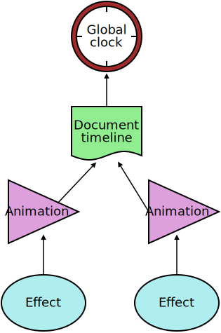
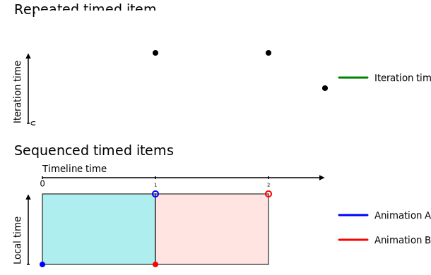

1. Introduction
Web Animations defines a model for supporting animation and synchronization on the Web platform. It is intended that other specifications will build on this model and expose its features through declarative means. In addition, this specification also defines a programming interface to the model that may be implemented by user agents that provide support for scripting.
1.1. Use cases
The Web Animations model is intended to provide the features necessary for expressing CSS Transitions [CSS3-TRANSITIONS], CSS Animations [CSS3-ANIMATIONS], and SVG [SVG11]. As such, the use cases of Web Animations model is the union of use cases for those three specifications.
The use cases for the programming interface include the following:
-
Inspecting running animations
-
Often Web applications must wait for certain animated effects to complete before updating some state. The programming interface in this specification allows such applications to wait for all currently running animation to complete, regardless of whether they are defined by CSS Transitions, CSS Animations, SVG animations, or created directly using the programming interface.
// Wait until all animations have finished before removing the element Promise.all( elem.getAnimations().map(animation => animation.finished) ).then(() => elem.remove());
Alternatively, applications may wish to query the playback state of animations without waiting.
var isAnimating = elem.getAnimations().some( animation => animation.playState == 'running' );
-
Controlling running animations
-
It is sometimes useful to perform playback control on animations so that they can respond to external inputs. For example, it may be necessary to pause all existing animations before displaying a modal dialog so that they do not distract the user’s attention.
// Pause all existing animations in the document document.timeline.getAnimations().forEach( animation => animation.pause() );
-
Creating animations from script
-
While it is possible to use ECMAScript to perform animation using
requestAnimationFrame[ANIMATION-TIMING], such animations behave differently to declarative animation in terms of how they are represented in the CSS cascade and the performance optimizations that are possible such as performing the animation on a separate thread. Using the Web Animations programming interface, it is possible to create animations from script that have the same behavior and performance characteristics as declarative animations.// Fade out quickly elem.animate({ transform: 'scale(0)', opacity: 0 }, 300);
-
Animation debugging
-
In a complex application, it may be difficult to determine how an element arrived in its present state. The Web Animations programming interface may be used to inspect running animations to answer questions such as, “Why is the opacity of this element changing?”
// Print the name of any opacity animations on elem elem.getAnimations().filter( animation => animation.effect instanceof KeyframeEffectReadOnly && animation.effect.getFrames().some( frame => frame.hasOwnProperty('opacity') ) ).forEach(animation => console.log(animation.effect.name));
Likewise, in order to fine tune animations, it is often necessary to reduce their playback rate and replay them.
// Slow down and replay any transform animations elem.getAnimations().filter( animation => animation.effect instanceof KeyframeEffectReadOnly && animation.effect.getFrames().some( frame => frame.hasOwnProperty('transform') ) ).forEach(animation => { animation.currentTime = 0; animation.playbackRate = 0.5; });
-
Testing animations
-
In order to test applications that make use of animations it is often impractical to wait for such animations to run to completion. Rather, it is desirable to seek the animations to specific times.
// Seek to the half-way point of an animation and check that the opacity is 50% elem.getAnimations().forEach( animation => animation.currentTime = animation.effect.computedTiming.delay + animation.effect.computedTiming.activeDuration / 2; ); assert_equals(getComputedStyle(elem).opacity, 0.5); // Check that the loading screen is hidden after the animations finish elem.getAnimations().forEach( animation => animation.finish() ); // Wait one frame so that event handlers have a chance to run requestAnimationFrame(() => { assert_equals( getComputedStyle(document.querySelector('#loading')).display, 'none'); });
1.2. Relationship to other specifications
CSS Transitions [CSS3-TRANSITIONS], CSS Animations [CSS3-ANIMATIONS], and SVG [SVG11] all provide mechanisms that generate animated content on a Web page. Although the three specifications provide many similar features, they are described in different terms. This specification proposes an abstract animation model that encompasses the common features of all three specifications. This model is backwards-compatible with the current behavior of these specifications such that they can be defined in terms of this model without any observable change.
The animation features in SVG 1.1 are defined in terms of SMIL Animation [SMIL-ANIMATION]. It is intended that by defining SVG’s animation features in terms of the Web Animations model, the dependency between SVG and SMIL Animation can be removed.
As with Timing control for script-based animations (commonly referred to as “requestAnimationFrame”) [ANIMATION-TIMING], the programming interface component of this specification allows animations to be created from script. The animations created using the interface defined in this specification, however, once created, are executed entirely by the user agent meaning they share the same performance characteristics as animations defined by markup. Using this interface it is possible to create animations from script in a simpler and more performant manner.
The time values used within the programming interface correspond with those used in Timing control for script-based animations [ANIMATION-TIMING] and their execution order is defined such that the two interfaces can be used simultaneously without conflict.
The programming interface component of this specification makes some additions to interfaces defined in HTML5 [HTML5].
1.3. Overview of this specification
This specification begins by defining an abstract model for animation. This is followed by a programming interface defined in terms of the abstract model. The programming interface is defined in terms of the abstract model and is only relevant to user agents that provide scripting support.
2. Web Animations model overview
At a glance, the Web Animations model consists of two largely independent pieces, a timing model and an animation model. The role of these pieces is as follows:
-
Timing model
-
Takes a moment in time and converts it to a proportional distance within a single iteration of an animation called the iteration progress. The iteration index is also recorded since some animations vary each time they repeat.
-
Animation model
-
Takes the iteration progress values and iteration indices produced by the timing model and converts them into a series of values to apply to the target properties and attributes.
Graphically, this flow can be represented as follows:

Overview of the operation of the Web Animations model.
The current time is input to the timing model which produces an iteration
progress value and an iteration index.
These parameters are used as input to the animation model which produces
the values to apply.
For example, consider an animation that:
-
starts after 3 seconds
-
runs twice,
-
takes 2 seconds every time, and
-
changes the width of a rectangle from 50 pixels to 100 pixels.
The first three points apply to the timing model. At a time of 6 seconds, it will calculate that the animation should be half-way through its second iteration and produces the result 0.5. The animation model then uses that information to calculate a width.
This specification begins with the timing model and then proceeds to the animation model.
3. Timing model
This section describes and defines the behavior of the Web Animations timing model.
3.1. The timing model at a glance
This section is non-normative
Two features characterise the Web Animations timing model: it is stateless and it is hierarchical.
3.1.1. Stateless
The Web Animations timing model operates by taking an input time and producing an output iteration progress. Since the output is based solely on the input time and is independent of previous inputs, the model may be described as stateless. This gives the model the following properties:
-
Frame-rate independent
-
Since the output is independent of previous inputs, the rate at which the model is sampled will not affect its progress. Provided the input times are proportional to the progress of real-world time, animations will progress at an identical rate regardless of the capabilities of the device running them.
-
Direction-agnostic
-
Since the sequence of inputs is insignificant, the model is directionless. This means that the model can be sampled in reverse or even in a backwards and forwards pattern without requiring any specialized handling.
-
Constant-time seeking
-
Since each input is independent of the previous input, the processing required to perform a seek operation, even far into the future, is at least potentially constant.
There are a few exceptions to the stateless behavior of the timing model.
Firstly, a number of methods defined in the programming interface to the model provide play control such as pausing an animation. These methods are defined in terms of the time at which they are called and are therefore stative. These methods are provided primarily for convenience and are not part of the core timing model but are layered on top.
Similarly, the finishing behavior of animations means that dynamic changes to the end time of the media (target effect) of an animation may produce a different result depending on when the change occurs. This behavior is somewhat unfortunate but has been deemed intuitive and consistent with HTML. As a result, the model can only truly be described as stateless in the absence of dynamic changes to its timing properties.
Finally, each time the model is sampled, it can be considered to establish a temporary state. While this temporary state affects the values returned from the programming interface, it has no influence on the subsequent samples and hence does not conflict with the stateless qualities described above.
3.1.2. Hierarchical
The other characteristic feature of the Web Animations timing model is that time is inherited. Time begins with a monotonically increasing time source and cascades down a number of steps to each animation. At each step, time may be shifted backwards and forwards, scaled, reversed, paused, and repeated.

A hierarchy of timing nodes. Each node in the tree derives its time from its parent node. At the root of the tree is the global clock.
In this level of the specification the hierarchy is shallow. A subsequent level of this specification will introduce the concept of group effects which allows for deeper timing hierarchies.
3.2. Timing model concepts
In Web Animations, timing is based on a hierarchy of time relationships between timing nodes. Parent nodes provide timing information to their child nodes in the form of time values. A time value is a real number which nominally represents a number of milliseconds from some moment. The connection between time values and wall-clock milliseconds may be obscured by any number of transformations applied to the value as it passes through the time hierarchy.
In the future we may have timelines that are based on UI gestures in which case the connection between time values and milliseconds will be weakened even further.
A time value may also be unresolved if, for example, a timing node is not in a state to produce a time value.
Periodically, the user agent will update the timing model in a process called sampling. On each sample the time values of each timing node are updated.
Further requirements on the frequency and sequencing of sampling are specified by HTML’s processing model [HTML].
Note: HTML currently refers to a “run
CSS animations and send events” operation but this should be
understood to include sampling all animations covered by this
specification, not only CSS animations.
Furthermore, the now parameter passed to this operation is ignored
in this specification since we define a more general model that supports
timelines whose time origin is not relative to navigationStart.
3.3. The global clock
At the root of the Web Animations timing hierarchy is the global clock.
The global clock is a source of monotonically increasing time values unaffected by adjustments to the system clock. The time values produced by the global clock represent wall-clock milliseconds from an unspecified historical moment. Because the zero time of the global clock is not specified, the absolute values of the time values produced by the global clock are not significant, only their rate of change.
Note: The global clock is not exposed in the programming interface and nor is it expected to be exposed by markup. As a result the moment from which global clock time values are measured, that is, the zero time of the clock, is implementation-dependent. One user agent may measure the number of milliseconds since the the user agent was loaded whilst another may use the time when the device was started. Both approaches are acceptable and produce no observable difference in the output of the model.
3.4. Timelines
A timeline provides a source of time values for the purpose of synchronization.
Typically, a timeline is tied to the global clock such that its absolute time is calculated as a fixed offset from the time of the global clock. This offset is established by designating some moment as the timeline’s zero time and recording the time value of the global clock at that moment. At subsequent moments, the time value of the timeline is calculated as the difference between the current time value of the global clock and the value recorded at the zero time.
On each sample, the time value of the global clock at the beginning of the sample is recorded and this recorded value is used as the time value of the global clock until the next sample.
Note: We anticipate that other types of timelines may be introduced in the future that are not tied to the global clock. For example, a timeline whose time values are related to the progress of a UI gesture.
Since a timeline may be defined relative to a moment that has yet to occur, it may not always be able to return a meaningful time value, but only an unresolved time value. A timeline is considered to be inactive when its time value is unresolved.
3.4.1. Document timelines
A document timeline is a timeline that is associated with a document.
The time values of a document timeline are calculated
as a fixed offset from the global clock such that the zero
time corresponds to the
navigationStart moment [NAVIGATION-TIMING] plus a
signed delta known as the origin time.
Prior to establishing the navigationStart moment, the document
timeline is inactive.
A document timeline that is associated with a document which is not an active document is also considered to be inactive.
3.4.2. The default document timeline
Each document
([DOM]) has a document timeline called the default document
timeline.
The default document timeline is unique to each document and persists for
the lifetime of the document including calls to document.open() [HTML5].
The default document timeline has an origin time of zero.
Since the document timelines are tied to the global clock by a fixed offset, time values reported by document timelines increase monotonically. Furthermore, since no scaling is applied, these time values are proportional to wall-clock milliseconds.
Since the time values of the default document timeline are
relative to the navigationStart time,
document.timeline.currentTime will roughly correspond to
Performance.now()
[HR-TIME] with the exception that
document.timeline.currentTime does not change within
a sample.
3.5. Animations
The children of a timeline are called animations. An animation takes an animation effect which is a static description of some timed behavior and binds it to a timeline so that it runs. An animation also allows run-time control of the connection between the animation effect and its timeline by providing pausing, seeking, and speed control. The relationship between an animation and an animation effect is analogous to that of a DVD player and a DVD.
An animation connects a single animation effect, called its target effect, to a timeline and provides playback control. Both of these associations are optional and configurable such that an animation may have no associated target effect or timeline at a given moment.
An animation’s start time is the time value of its timeline when its target effect is scheduled to begin playback. An animation’s start time is initially unresolved.
An animation also maintains a hold time time value which is used to fix the animation’s output time value, called its current time, in circumstances such as pausing. The hold time is initially unresolved.
In order to establish the priority of conflicting animations, each animation has an associated animation sequence number that is assigned a globally unique sequence number each time it transitions out of the idle play state.
3.5.1. Setting the timeline of a animation
The procedure to set the timeline of an animation, animation, to new timeline which may be null, is as follows:
-
Let old timeline be the current timeline of animation, if any.
-
If new timeline is the same object as old timeline, abort this procedure.
-
Let previous animation time be the current time of animation.
-
If new timeline is null and old timeline is not null, run the procedure to reset an animation’s pending tasks on animation.
Note that if new timeline is not null and animation has a pending play task or a pending pause task no special handling is required: the pending task will run as soon as the animation is ready even though this may occur at a different moment than it might have done with the old timeline.
-
Let the timeline of animation be new timeline.
-
If previous animation time is resolved, run the procedure to silently set the current time of animation to previous animation time.
-
Run the procedure to update an animation’s finished state for animation with the did seek flag set to false.
The procedure to reset an animation’s pending tasks for animation is as follows:
-
If animation has a pending play task, cancel that task.
-
If animation has a pending pause task, cancel that task.
-
Reject animation’s current ready promise with a DOMException named "AbortError".
-
Let animation’s current ready promise be the result of creating a new resolved Promise object.
3.5.2. Setting the target effect of an animation
The procedure to set the target effect of an animation, animation, to new effect which may be null, is as follows:
-
Let old effect be the current target effect of animation, if any.
-
If new effect is the same object as old effect, abort this procedure.
-
If new effect is null and old effect is not null, run the procedure to reset an animation’s pending tasks on animation.
-
If animation has a pending pause task, reschedule that task to run as soon as animation is ready.
-
If animation has a pending play task, reschedule that task to run as soon as animation is ready to play new effect.
-
If new effect is not
nulland if new effect is the target effect of another animation, previous animation, run the procedure to set the target effect of an animation (this procedure) on previous animation passing null as new effect. -
Let the target effect of animation be new effect.
-
Run the procedure to update an animation’s finished state for animation with the did seek flag set to false.
3.5.3. The current time of an animation
Animations provide a time value to their target effect called the animation’s current time.
The current time is calculated from the first matching condition from below:
-
The current time is the animation’s hold time.
-
If any of the following are true:
-
the animation has no associated timeline, or
-
the animation’s start time is unresolved.
-
-
The current time is an unresolved time value.
-
Otherwise,
-
current time = (timeline time - start time) × playback rateWhere timeline time is the current time value of the associated timeline. The playback rate value is defined in §3.5.16 Speed control.
3.5.4. Setting the current time of an animation
The current time of an animation can be set to a new value to seek the animation. The procedure for setting the current time is split into two parts.
The procedure to silently set the current time of an animation, animation, to seek time is as follows:
-
If seek time is an unresolved time value, then perform the following steps.
-
If the current time is resolved, then throw a TypeError.
-
Abort these steps.
-
-
Update either animation’s hold time or start time as follows:
-
If any of the following conditions are true:
-
animation’s start time is unresolved, or
-
animation has no associated timeline or the associated timeline is inactive, or
-
animation’s playback rate is 0,
-
Set animation’s hold time to seek time.
-
Otherwise,
-
Set animation’s start time to the result of evaluating
timeline time - (seek time / playback rate)where timeline time is the current time value of timeline associated with animation.
-
-
If animation has no associated timeline or the associated timeline is inactive, make animation’s start time unresolved.
This preserves the invariant that when we don’t have an active timeline it is only possible to set either the animation start time or the animation’s current time.
-
Make animation’s previous current time unresolved.
The procedure to set the current time of an animation, animation, to seek time is as follows:
-
Run the steps to silently set the current time of animation to seek time.
-
If animation has a pending pause task, synchronously complete the pause operation by performing the following steps:
-
Set animation’s hold time to seek time.
-
Make animation’s start time unresolved.
-
Cancel the pending pause task.
-
Resolve animation’s current ready promise with animation.
-
-
Run the procedure to update an animation’s finished state for animation with the did seek flag set to true.
3.5.5. Setting the start time of an animation
The procedure to set the animation start time of animation, animation, to start time, new start time, is as follows:
-
Let timeline time be the current time value of the timeline that animation is associated with. If there is no timeline associated with animation or the associated timeline is inactive, let the timeline time be unresolved.
-
If timeline time is unresolved and new start time is resolved, make animation’s hold time unresolved.
This preserves the invariant that when we don’t have an active timeline it is only possible to set either the animation start time or the animation’s current time.
-
Let previous current time be animation’s current time.
Note: This is the current time after applying the changes from the previous step which may cause the current time to become unresolved.
-
Set animation’s start time to new start time.
-
Update animation’s hold time based on the first matching condition from the following,
-
If new start time is resolved,
-
If animation’s playback rate is not zero, make animation’s hold time unresolved.
-
Otherwise (new start time is unresolved),
-
Set animation’s hold time to previous current time even if previous current time is unresolved.
-
-
If animation has a pending play task or a pending pause task, cancel that task and resolve animation’s current ready promise with animation.
-
Run the procedure to update an animation’s finished state for animation with the did seek flag set to false.
Is this right? If you shift an animation backwards in time so that it is now finished, should the current time jump to the end of the target effect, or be allowed to sit past the end of the target effect?
3.5.6. Waiting for the target effect
This section is non-normative
Some operations performed by an animation may not occur instantaneously. For example, some user agents may delegate the playback of an animation to a separate process or to specialized graphics hardware each of which may incur some setup overhead.
If such an animation is timed from the moment when the animation was triggered there may be a significant jump between the first and second frames of the animation corresponding to the setup time involved.
To avoid this problem, Web Animations typically begins timing animations from the moment when the first frame of the animation is complete. This is represented by an unresolved start time on the animation which becomes resolved when the animation is ready. Content may opt out of this behavior by setting the start time to a resolved time value.
An animation is ready at the first moment where both of the following conditions are true:
-
the user agent has completed any setup required to begin the playback of the animation’s target effect including rendering the first frame of any keyframe effect.
-
the animation is associated with a timeline that is not inactive.
3.5.7. Promise objects
Promise objects are defined by [ECMA-262], section 25.4.
To resolve a Promise with value,
call the [[Call]] internal method of [[Resolve]] on the Promise
capability record for the promise, passing undefined as
thisArgument and (value) as argumentsList.
To reject a Promise with reason,
call the [[Call]] internal method of [[Reject]] on the Promise
capability record for the promise, passing undefined as
thisArgument and (reason) as argumentsList.
To create a new resolved Promise with value, call Promise.resolve, passing value as x.
3.5.8. The current ready promise
Each animation has a current ready promise. The current ready promise is initially a resolved Promise created using the procedure to create a new resolved Promise.
The object is replaced with a new Promise object every time the animation enters the pending play state as well as when the animation is cancelled (see §3.5.15 Cancelling an animation).
Note that since the same object is used for both pending play and pending pause requests, authors are advised to check the state of the animation when the Promise is resolved.
For example, in the following code fragment, the state of the animation
will be running when the
current ready promise is resolved.
This is because the animation does not leave the pending play state
in between the calls to pause and
play and hence the current ready promise does
not change.
animation.pause(); animation.ready.then(function() { // Displays 'running' alert(animation.playState); }); animation.play();
3.5.9. Playing an animation
The procedure to play an animation, animation, is as follows:
-
Let aborted pause be a boolean flag that is true if animation has a pending pause task, and false otherwise.
-
Let has pending ready promise be a boolean flag that is initially false.
-
Perform the steps corresponding to the first matching condition from the following, if any:
-
If animation playback rate > 0 and either animation’s:
-
current time is unresolved, or
-
current time < zero, or
-
-
Set animation’s hold time to zero.
-
If animation playback rate < 0 and either animation’s:
-
current time is unresolved, or
-
current time ≤ zero, or
-
-
If target effect end is positive infinity, throw an InvalidStateError and abort these steps. Otherwise, set animation’s hold time to target effect end.
-
If animation playback rate = 0 and animation’s current time is unresolved,
-
Set animation’s hold time to zero.
-
-
If animation has a pending play task or a pending pause task,
-
Cancel that task.
-
Set has pending ready promise to true.
-
-
If animation’s hold time is unresolved and aborted pause is false, abort this procedure.
-
If animation’s hold time is resolved, let its start time be unresolved.
-
If has pending ready promise is false, let animation’s current ready promise be a new (pending) Promise object.
-
Schedule a task to run as soon as animation is ready. The task shall perform the following steps:
-
Let ready time be the time value of the timeline associated with animation at the moment when animation became ready.
-
If animation’s start time is unresolved, perform the following steps:
-
Let new start time be the result of evaluating
ready time - hold time / animation playback ratefor animation. If the animation playback rate is zero, let new start time be simply ready time. -
If animation’s playback rate is not 0, make animation’s hold time unresolved.
-
Set the animation start time of animation to new start time.
-
-
Resolve animation’s current ready promise with animation.
-
Run the procedure to update an animation’s finished state for animation with the did seek flag set to false.
Note that the order of the above two steps is important since it means that an animation with zero-length target effect will resolve its current ready promise before its current finished promise.So long as the above task is scheduled but has yet to run, animation is described as having a pending play task.
A user agent MAY execute the above task immediately (if it determines animation is immediately ready) thereby bypassing the pending play state altogether.
-
-
Run the procedure to update an animation’s finished state for animation with the did seek flag set to false.
3.5.10. Pausing an animation
Whenever an animation has an unresolved start time, its current time will be suspended.
As with playing an animation, pausing may not happen instantaneously (see §3.5.6 Waiting for the target effect). For example, if animation is performed by a separate process, it may be necessary to synchronize the current time to ensure that it reflects the state drawn by the animation process.
The procedure to pause an animation, animation, is as follows:
-
If animation has a pending pause task, abort these steps.
-
If the play state of animation is paused, abort these steps.
-
If the animation’s current time is unresolved, perform the steps according to the first matching condition from below:
-
If animation’s playback rate is ≥ 0,
-
Let animation’s hold time be zero.
Should we throw an exception for playback rate = 0?
-
Otherwise,
-
If target effect end for animation is positive infinity, throw an InvalidStateError and abort these steps. Otherwise, let animation’s hold time be target effect end.
-
-
Let has pending ready promise be a boolean flag that is initially false.
-
If animation has a pending play task, cancel that task and let has pending ready promise be true.
-
If has pending ready promise is false, set animation’s current ready promise to a new (pending) Promise object.
-
Schedule a task to be executed at the first possible moment after the user agent has performed any processing necessary to suspend the playback of animation’s target effect, if any. The task shall perform the following steps:
-
If animation’s start time is resolved, let animation’s hold time be the result of evaluating
ready time - (start time / playback rate).Note: If we start playing an animation from the idle state, we will set the hold time to a suitable value while the animation is pending but leave the start time unresolved. The check here for an unresolved start time here ensures we preserve the hold time when aborting a pending play.
-
Make animation’s start time unresolved.
-
Resolve animation’s current ready promise with animation.
-
Run the procedure to update an animation’s finished state for animation with the did seek flag set to false.
So long as the above task is scheduled but has yet to run, animation is described as having a pending pause task. While the task is running, however, animation does not have a pending pause task.
-
-
Run the procedure to update an animation’s finished state for animation with the did seek flag set to false.
3.5.11. Reaching the end
This section is non-normative
DVD players or cassette players typically continue playing until they reach the end of their media at which point they stop. If such players are able to play in reverse, they typically stop playing when they reach the beginning of their media. In order to emulate this behavior and to provide consistency with HTML’s media elements [HTML5], the current time of Web Animations' animations do not play forwards beyond the end time of their target effect or play backwards past time zero.
An animation that has reached the natural boundary of its playback range is said to have finished.
Graphically, the effect of limiting the current time is shown below.

The effect of limiting the current time of an animation with a start time of 1s, a target effect of length 3s, and a positive animation playback rate. After the current time of the animation reaches the end of the target effect, it is capped at 3s.
It is possible, however, to seek the current time of an animation to a time past the end of the target effect. When doing so, the current time will not progress but the animation will act as if it had been paused at the seeked time.
This allows, for example, seeking the current time of an animation with no target effect to 5s. If target effect with an end time later than 5s is later associated with the animation, playback will begin from the 5s mark.
Similar behavior to the above scenario may arise when the length of an animation’s target effect changes.
Similarly, when the animation playback rate is negative, the current time does not progress past time zero.
3.5.12. The current finished promise
Each animation has a current finished promise. The current finished promise is initially a pending Promise object.
The object is replaced with a new (pending) Promise object every time the animation leaves the finished play state.
3.5.13. Updating the finished state
For an animation with a positive playback rate, the current time continues to increase until it reaches the target effect end.
The target effect end of an animation is equal to the end time of the animation’s target effect. If the animation has no target effect, the target effect end is zero.
An animation with a negative playback rate, the current time continues to decrease until it reaches zero.
A running animation that has reached this boundary (or overshot it) and has a resolved animation start time is said to be finished.
The crossing of this boundary is checked on each modification to the animation object using the procedure to update an animation’s finished state defined below. This procedure is also run on each sample and each time the timing properties of the target effect associated with an animation are updated.
At least with regards to resolving promises / dispatching finish events, it might be better to queue a task for that, and if the animation is still finished when the task runs, resolve the promise / dispatch the event. That way scripts don’t need to be so careful about the order in which they make timing changes.
For each animation, the user agent maintains a previous current time time value that is originally unresolved, and a previous finished state boolean flag that is initially false.
Whilst during normal playback the current time of an animation is limited to the boundaries described above, it is possible to seek the current time of an animation to times outside those boundaries using the procedure to set the current time of an animation.
The procedure to update an animation’s finished state for animation, given a flag did seek (to indicate if the update is being performed after setting the current time), is as follows:
-
If both of the following conditions are true,
-
animation’s start time is resolved, and
-
animation does not have a pending play task or a pending pause task,
then update animation’s hold time based on the first matching condition for animation from below, if any:
-
If animation playback rate > 0 and current time is resolved and greater than or equal to target effect end,
-
If did seek is true, let the hold time be the value of current time.
If did seek is false, let the hold time be the maximum value of previous current time and target effect end. If the previous current time is unresolved, let the hold time be target effect end.
-
If animation playback rate < 0 and current time is resolved and less than or equal to 0,
-
If did seek is true, let the hold time be the value of current time.
If did seek is false, let the hold time be zero.
-
If current time is resolved, and animation playback rate ≠ 0, and animation is associated with an active timeline,
-
Perform the following steps:
-
If did seek is true and the hold time is resolved, let animation’s start time be equal to the result of evaluating
timeline time - (hold time / playback rate)where timeline time is the current time value of timeline associated with animation. -
Let the hold time be unresolved.
-
-
-
Let current finished state be true if the play state of animation is finished. Otherwise, let it be false.
-
If current finished state is true and previous finished state is false, resolve animation’s current finished promise object with animation.
-
If current finished state is false and previous finished state is true, set animation’s current finished promise to a new (pending) Promise object.
-
Set animation’s previous finished state to current finished state.
-
Set the previous current time of animation be the result of calculating its current time.
3.5.14. Finishing an animation
An animation can be advanced to the natural end of its current playback direction by using the procedure to finish an animation for animation defined below:
-
If animation playback rate is zero, or if animation playback rate > 0 and target effect end is infinity, throw an InvalidStateError and abort these steps.
-
Set limit as follows:
-
If animation playback rate > 0,
-
Let limit be target effect end.
-
Otherwise,
-
Let limit be zero.
-
-
Set the current time to limit.
The procedure for setting the current time has the side effect of cancelling any pending pause task so we don’t need to handle that here. -
If animation’s start time is unresolved and animation has an associated active timeline, let the start time be the result of evaluating
timeline time - (limit / playback rate)where timeline time is the current time value of the associated timeline. -
If there is a pending play task and start time is resolved, cancel that task and resolve the current ready promise of animation with animation.
-
Run the procedure to update an animation’s finished state animation with the did seek flag set to true.
Note: Finishing an animation does not necessarily cause that animation to enter the finished play state. In particular, if an animation was in the paused play state before finishing, it will remain in the paused play state afterwards.
3.5.15. Cancelling an animation
An animation can be cancelled which causes the current time to become unresolved hence removing any effects caused by the target effect.
The procedure to cancel an animation for animation is as follows:
-
Run the procedure to reset an animation’s pending tasks on animation.
-
Reject the current finished promise with a DOMException named "AbortError".
If animation is already idle should we just keep the existing finished promise and not reject it? That seems more intuitive but the current behavior where
cancel()always rejects the current finished promise might also be more useful/reliable? -
Let current finished promise be a new (pending) Promise object.
-
Make animation’s hold time unresolved.
-
Make animation’s start time unresolved.
3.5.16. Speed control
The rate of play of an animation can be controlled by setting its playback rate. For example, setting a playback rate of 2 will cause the animation’s current time to increase at twice the rate of its timeline. Similarly, a playback rate of -1 will cause the animation’s current time to decrease at the same rate as the time values from its timeline increase.
Animations have a playback rate that provides a scaling factor from the rate of change of the associated timeline’s time values to the animation’s current time. The playback rate is initially 1.
Setting an animation’s playback rate to zero effectively pauses the animation (however, the play state does not necessarily become paused).
3.5.16.1. Updating the playback rate of an animation
Changes to the playback rate trigger a compensatory seek so that that the animation’s current time is unaffected by the change to the playback rate.
The procedure to set the animation playback rate of an animation, animation to new playback rate is as follows:
-
Let previous time be the value of the current time of animation before changing the playback rate.
-
Set the playback rate to new playback rate.
-
If previous time is resolved, set the current time of animation to previous time.
The procedure to silently set the animation playback rate of animation, animation to new playback rate is identical to the above procedure except that rather than invoking the procedure to set the current time in the final step, the procedure to silently set the current time is invoked instead.
3.5.17. Reversing an animation
The procedure to reverse an animation of animation animation is as follows:
-
If there is no timeline associated with animation, or the associated timeline is inactive throw an InvalidStateError and abort these steps.
-
Silently set the animation playback rate of animation to
−animation playback rate.This must be done silently or else we may end up resolving the current ready promise when we do the compensatory seek despite the fact that we are most likely not exiting the pending play state. -
Run the steps to play an animation for animation.
3.5.18. Play states
An animation may be described as being in one of the following play states for each of which, a non-normative description is also provided:
-
The current time of the animation is unresolved and there are no pending tasks. In this state the animation has no effect.
-
The animation is waiting on some pending task to complete.
-
The animation has a resolved current time that changes on each sample (provided the animation playback rate is not zero).
-
The animation has been suspended and the current time is no longer changing.
-
The animation has reached the natural boundary of its playback range and the current time is no longer updating.
The play state of animation, animation, at a given moment is the state corresponding to the first matching condition from the following:
-
animation has a pending play task or a pending pause task,
-
The current time of animation is unresolved,
-
The start time of animation is unresolved,
-
For animation, animation playback rate > 0 and current time ≥ target effect end; or
animation playback rate < 0 and current time ≤ 0, -
Otherwise,
Note that the paused play state effectively “wins” over the finished play state.
However, an animation that is paused outside of its natural playback range can be converted from a paused animation into a finished animation without restarting by setting the animation start time such as below:
animation.effect.timing.duration = 5000; animation.currentTime = 4000; animation.pause(); animation.ready.then(function() { animation.effect.timing.duration = 3000; alert(animation.playState); // Displays 'paused' animation.startTime = document.timeline.currentTime - animation.currentTime * animation.playbackRate; alert(animation.playState); // Displays 'finished' });
3.6. Animation effects
An animation effect is an abstract term referring to an item in the timing hierarchy.
3.6.1. Relationship between animation effects and animations
The target effect of an animation, if set, is a type of animation effect. The target effect of an animation is said to be associated with that effect. At a given moment, an animation effect can be associated with at most one animation.
An animation effect, effect, is associated with a timeline, timeline, if effect is associated with an animation which, in turn, is associated with timeline.
3.6.2. Types of animation effects
This specification defines a single type of animation effect: keyframe effects. Subsequent levels of this specification will define further types of animation effects. All types of animation effects define a number of common properties which are described in the following sections.
3.6.3. The active interval
The period that an animation effect is scheduled to run is called its active interval. Each animation effect has only one such interval.
The lower bound of the active interval typically corresponds to the start time of the animation associated with this animation effect but may be shifted by a start delay on the animation effect.
The upper bound of the interval is determined by the active duration.
The relationship between the start time, start delay, and active duration is illustrated below.

Examples of the effect of the start delay on the endpoints of
the active interval.
(a) An animation effect with no delay; the start time and beginning of
the active interval are coincident.
(b) An animation effect with a positive delay; the beginning of the
active interval is deferred by the delay.
(c) An animation effect with a negative delay; the beginning of the
active interval is brought forward by the delay.
An end delay may also be specified but is primarily only of use when sequencing animations.
Animation effects define an active interval which is the period of time during which the effect is scheduled to produce its effect with the exception of fill modes which apply outside the active interval.
The lower bound of the active interval is defined by the start delay.
The start delay of an animation effect is a signed offset from the start time of the animation with which the animation effect is associated
The length of the active interval is called the active duration, the calculation of which is defined in §3.9.2 Calculating the active duration.
Similar to the start delay, an animation effect also has
an end delay which
is primarily of use when sequencing animations
based on the end time of another animation effect.
Although this is typically only useful in combination with sequence effects
which are introduced in a subsequent level of this specification, it is included
here for the purpose of representing the min
attribute in SVG ([SVG11], Chapter 19).
The end time of an animation effect is the result of calculating the following expression:
end time =
max(start delay + active duration + end delay,
0).
3.6.4. Local time
The local time of an animation effect at a given moment is based on the first matching condition from the following:
-
If the animation effect is associated with an animation,
-
the local time is the current time of the animation.
-
Otherwise,
-
the local time is unresolved.
3.6.5. Animation effect phases and states
At a given moment, an animation effect may be in one of three possible phases. If an animation effect has an unresolved local time it will not be in any phase.
The different phases are illustrated below.

An example of the different phases and states used to describe an animation effect.
The phases are as follows:
-
The animation effect’s local time falls before the effect’s active interval.
-
The animation effect’s local time falls inside the effect’s active interval.
-
The animation effect’s local time falls after the effect’s active interval.
In addition to these phases, an animation effect may also be described as being in one of several overlapping states. These states are only established for the duration of a single sample and are primarily a convenience for describing stative parts of the model.
These states and their useage within the model are summarised as follows:
-
Corresponds to an animation effect whose active time is changing on each sample.
-
Corresponds to an animation effect that is either in play or may become in play in the future. This will be the case if the animation effect is in play or in its before phase, or it has an ancestor for which this is true thereby opening up the possibility that this animation effect might play again (e.g. due to repeating).
-
Corresponds to an animation effect that has a resolved active time. This occurs when either the animation effect is in its active phase or outside the active interval but at a time where the effect’s fill mode (see §3.7 Fill behavior) causes its active time to be resolved. Only in effect animation effects apply a result to their target.
The normative definition of each of these states follows.
An animation effect is in the before phase if the animation effect’s local time is not unresolved and is less than the effect’s start delay.
An animation effect is in the active phase if all of the following conditions are met:
-
the animation effect’s local time is not unresolved, and
-
the animation effect’s local time is greater than or equal to its start delay, and
-
the animation effect’s local time is less than the sum of its start delay and active duration.
An animation effect is in the after phase if the animation effect’s local time is not unresolved and is greater than or equal to the sum of its start delay and active duration.
An animation effect is in play if all of the following conditions are met:
-
the animation effect is in the active phase, and
-
the animation effect is associated with an animation that is not finished.
An animation effect is current if either of the following conditions is true:
-
the animation effect is in the before phase, or
-
the animation effect is in play.
An animation effect is in effect if its active time as calculated according to the procedure in §3.9.3.1 Calculating the active time is not unresolved.
3.7. Fill behavior
The effect of an animation effect when it is not in play is determined by its fill mode.
The possible fill modes are:
-
none,
-
forwards,
-
backwards, and
-
both.
The normative definition of these modes is incorporated in the calculation of the active time in §3.9.3.1 Calculating the active time.
3.7.1. Fill modes
The effect of each fill mode is as follows:
-
none
-
The animation effect has no effect when it is not in play.
-
forwards
-
When the animation effect is in the after phase, the animation effect will produce the same transformed time value as the last moment it is scheduled to be in play.
For all other times that the animation effect is not in play, it will have no effect.
-
backwards
-
When the animation effect is in the before phase, the animation effect will produce the same transformed time value as the earliest moment that it is scheduled to be in play.
For all other times that the animation effect is not in play, it will have no effect.
-
both
-
When the animation effect is in its before phase, backwards fill behavior is used.
When the animation effect is in its after phase, forwards fill behavior is used.
Some examples of the these fill modes are illustrated below.

Examples of various fill modes and the states produced.
(a) fill mode ‘none’. The animation effect has no effect
outside its active interval.
(b) fill mode ‘forwards’. After the active interval has
finished, the timed value continues to maintain a fill value.
(c) fill mode ‘backwards’. The animation effect produces
a fill value until the start of the active interval.
(d) fill mode ‘both’. Both before and after the active
interval the animation effect produces a fill value.
Note: setting a fill mode has no bearing on the endpoints of the active interval. However, the fill mode does have an effect on various other properties of the timing model since the active time of an animation effect is only defined (that is, not unresolved) inside the active interval or when a fill is applied.
To fix this it is possible we will wish to introduce overflow fill modes that respond to time values larger than or smaller than the active time range by extrapolating rather than filling.
See section 15 (Overflowing fill) of minuted discussion from Tokyo 2013 F2F.
3.8. Repeating
3.8.1. Iteration intervals
It is possible to specify that an animation effect should repeat a fixed number of times or indefinitely. This repetition occurs within the active interval. The span of time during which a single repetition takes place is called an iteration interval.
Unlike the active interval, an animation effect can have multiple iteration intervals although typically only the interval corresponding to the current iteration is of interest.
The length of a single iteration is called the iteration duration. The initial iteration duration of an animation effect is zero.
Comparing the iteration duration and the active duration we have:
-
Iteration duration
-
The time taken for a single iteration of the animation effect to complete.
-
Active duration
-
The time taken for the entire animation effect to complete, including repetitions. This may be longer or shorter than the iteration duration.
The relationship between the iteration duration and active duration is illustrated below.

A comparison of the iteration duration and active duration of an animation effect with an iteration count of 2.5. Note that the iteration duration for the final iteration does not change, it is simply cut-off by the active duration.
3.8.2. Controlling iteration
The number of times an animation effect repeats is called its iteration count. The iteration count is a real number greater than or equal to zero. The iteration count may also be positive infinity to represent that the animation effect repeats indefinitely.
In addition to the iteration count, animation effects also have an iteration start property which specifies an offset into the series of iterations at which the animation effect should begin. The iteration start is a finite real number greater than or equal to zero.
The behavior of these parameters is defined in the calculations in §3.9 Core animation effect calculations.
The effect of the iteration count and iteration start parameters is illustrated below.

The effect of the iteration count and iteration start
parameters.
In the first case the iteration count is 2.5 resulting in the
third iteration being cut-off half way through its iteration
interval.
The second case is the same but with an iteration start of
0.5.
This causes the animation effect to begin half way through the
first iteration.
Unlike the iteration count parameter, the iteration start parameter does not effect the length of the active duration.
Note that values of iteration start greater than or equal to one are generally not useful unless used in combination with an animation effect that has an iteration composite operation of accumulate.
3.8.3. Iteration time space
In Web Animations all times are relative to some point of reference. These different points of reference produce different time spaces.
This can be compared to coordinate spaces as used in computer graphics. The zero time of a time space is analogous to the origin of a coordinate space.
We can describe animations that repeat as establishing a new time space each time the animation repeats: the iteration time space.
Iteration time space is a time space whose zero time is the beginning of an animation effect’s current iteration.
Within the Web Animations model we also refer to active time which is a time relative to the beginning of the active interval. This time space, however, is internal to the model and not exposed in the programming interface or in markup.
These time spaces are illustrated below.

A comparison of local time, active time, and iteration time for an animation with a iteration duration of 1s and an iteration count of 2.5.
Note: While the time spaces themselves are not bounded, Web Animations defines active time and iteration time such that they are clamped to a set range as shown in the diagram. For example, whilst a time of -1 second is a valid time in active time space, the procedure for calculating the active time defined in §3.9.3.1 Calculating the active time will never return a negative value.
In addition to these time spaces we can also refer to the document time space which is time space of the time values of the default document timeline of the active document.
3.8.4. Interval timing
When an animation effect repeats we must define the behavior at the
iteration boundaries.
For this, and indeed for all interval timing, Web Animations uses an
endpoint-exclusive timing model.
This means that whilst the begin time of an interval
is included in the interval, the end time time is not.
In interval notation this can written [begin, end).
This model provides sensible behavior when intervals are repeated and
sequenced since there is no overlap between the intervals.
In the examples below, for the repeated effect, at local time 1s, the iteration time is 0. For the sequenced animations, at timeline time 1s, only animation B’s target effect will be in play; there is no overlap.

Illustration of end-point exclusive timing. For both repeated and sequenced animation effects there is no overlap at the boundaries between intervals.
An exception to this behavior is that when performing a fill, if the fill begins at an interval endpoint, the endpoint is used. This behavior falls out of the algorithm given in §3.9.3.3 Calculating the iteration time and is illustrated below.

After one iteration, the iteration time is 0, but after two iterations (and thereonwards), the iteration time is equal to the iteration duration due to the special behavior defined when an animation effect fills.
3.9. Core animation effect calculations
3.9.1. Overview
At the core of the Web Animations timing model is the process that takes a local time value and converts it to an iteration time. Following this, further transformations are applied before resulting at a final transformed time.
The first step in this process is to calculate the bounds of the active interval which is determined by the active duration.
This process is illustrated below.

Calculation of the active duration is based on multiplying the iteration duration by the iteration count.
The process for calculating the active duration is normatively defined in §3.9.2 Calculating the active duration.
Having established the active duration, the process for transforming an animation effect’s local time into its transformed time is illustrated below.

An overview of timing model calculations.
(1) The local time is determined from the associated
animation.
(2) The local time is converted into an active time by
incorporating the start
delay.
(3) The iteration start property is applied to the active time to produce the scaled active
time.
(4) The scaled active time is then converted to an offset
within a single iteration: the iteration time.
(5) The iteration time is converted into a directed time
by incorporating the playback direction.
(6) Finally, a timing function is applied to the directed
time to produce the transformed time.
The first step, calculating the local time is described in §3.6.4 Local time. Steps 2 to 4 in the diagram are described in the following sections. Steps 5 and 6 are described in §3.10.1 Calculating the directed time and §3.11.5 Calculating the transformed time respectively.
3.9.2. Calculating the active duration
The active duration is calculated as follows:
active duration =iteration duration × iteration countIf either the iteration duration or iteration count are zero, the active duration is zero.
This clarification is needed since the result of infinity multiplied by zero is undefined according to IEEE 754-2008.
3.9.3. Transforming the local time
3.9.3.1. Calculating the active time
The active time is based on the local time and start delay. However, it is only defined when the animation effect should produce an output and hence depends on its fill mode and phase as follows,
-
If the animation effect is in the before phase,
-
The result depends on the first matching condition from the following,
-
If the fill mode is backwards or both,
-
Return zero.
-
Otherwise,
-
Return an unresolved time value.
-
-
If the animation effect is in the active phase,
-
Return
local time - start delay. -
If the animation effect is in the after phase,
-
The result depends on the first matching condition from the following,
-
If the fill mode is forwards or both,
-
Return the active duration.
-
Otherwise,
-
Return an unresolved time value.
-
-
Otherwise (the local time is unresolved),
-
Return an unresolved time value.
3.9.3.2. Calculating the scaled active time
Before the active time can be converted to an iteration time we must factor in the animation effect’s iteration start. The result is called the scaled active time.
In order to calculate the scaled active time we first define the start offset as follows:
start offset =iteration start × iteration durationIf the iteration start is zero, the start offset is zero.
Note: This clarification is needed since the iteration duration may be infinity and the result of infinity multiplied by zero is undefined according to IEEE 754-2008.
The scaled active time is calculated according to the following steps:
-
If the active time is unresolved, return an unresolved time value.
-
Return
active time + start offset.
3.9.3.3. Calculating the iteration time
The iteration time is calculated according to the following steps:
-
If the scaled active time is unresolved, return unresolved.
-
If the iteration duration is zero, return zero.
-
If
scaled active time - start offsetis equal to the active duration, and iteration count is not zero, and(iteration count + iteration start) % 1is zero, return the iteration duration. -
Otherwise, return
scaled active time % iteration duration.
3.9.4. Calculating the current iteration
The current iteration can be calculated using the following steps:
-
If the active time is unresolved, return unresolved.
-
If the active time is zero, return
floor(iteration start).This is needed so that we report the correct current iteration when doing a backwards fill for an animation with a zero-length iteration duration. -
If the iteration duration is zero,
-
If the iteration count is infinity, return infinity.
-
Otherwise, return
ceil(iteration start + iteration count) - 1.
-
-
If the iteration time equals the iteration duration, return
iteration start + iteration count - 1. -
Return
floor(scaled active time / iteration duration).If the iteration duration is infinity, the result of
floor(scaled active time / iteration duration)will be zero as defined by IEEE 754-2008.
3.10. Direction control
Animation effects may also be configured to run iterations in alternative directions using direction control. For this purpose, animation effects have a playback direction parameter which takes one of the following values:
-
normal,
-
reverse,
-
alternate, or
-
alternate-reverse.
The semantics of these values are incorporated into the calculation of the directed time which follows.
A non-normative definition of these values is as follows:
-
normal
-
All iterations are played as specified.
-
reverse
-
All iterations are played in the reverse direction from the way they are specified.
-
alternate
-
Even iterations are played as specified, odd iterations are played in the reverse direction from the way they are specified.
-
alternate-reverse
-
Even iterations are played in the reverse direction from the way they are specified, odd iterations are played as specified.
3.10.1. Calculating the directed time
The directed time is calculated from the iteration time using the following steps:
-
If the iteration time is unresolved, return unresolved.
-
Calculate the current direction using the first matching condition from the following list:
-
If playback direction is
normal, -
Let the current direction be forwards.
-
If playback direction is
reverse, -
Let the current direction be reverse.
-
Otherwise,
-
-
Let d be the current iteration.
-
If playback direction is
alternate-reverseincrement d by 1. -
There used to be a step here which seemed to be adding special handling for filling when the effect ends on a repeat boundary but it seems like that is taken care of by the calcuation of iteration time and current iteration. Is anything actually needed here?
-
If
d % 2 == 0, let the current direction be forwards, otherwise let the current direction be reverse. If d is infinity, let the current direction be forwards.
-
-
-
If the current direction is forwards then return the iteration time.
Otherwise, return the iteration duration - iteration time.
3.11. Time transformations
3.11.1. Scaling the time
It is often desirable to control the rate at which an animation effect progresses. For example, easing the rate of animation can create a sense of momentum and produce a more natural effect. Conversely, in other situations such as when modelling a discrete change, a smooth transition is undesirable and instead it is necessary for the animation effect to progress in a series of distinct steps.
For such situations Web Animations provides timing functions that scale the progress of an animation effect.
Timing functions take an input progress value and produce a scaled output progress value.

Example of a timing function that produces an ease-in effect.
Given an input progress of 0.7, the timing function scales the
value to produce an output progress of 0.52.
By applying this timing function, time will appear to progress more
slowly at first but then gradually progress more quickly.
Timing functions are applied to an iteration of an animation effect.
3.11.2. Timing functions
A timing function takes an input progress value in the range [0, 1] and produces an output progress value whose range is unbounded (i.e. positive and negative infinity are permitted).
Animation effects have one timing function associated with them. The default timing function is the linear timing function whose output is identical to its input. The linear timing function can be represented by the string “linear”.
The range of timing functions that may be applied to a given animation effects depends on the type of the animation effects.
3.11.3. Scaling using a cubic Bézier curve
A common method of producing easing effects is to use a cubic Bézier curve to scale the time. The endpoints of the curve are fixed at (0, 0) and (1, 1) while two control points P1 and P2 define the shape of the curve. Provided the x values of P1 and P2 lie within the range [0, 1] such a curve produces a function that is used to map input times (the x values) onto output times (the y values). This arrangement is illustrated below.

A cubic Bézier curve used as a timing function.
The shape of the curve is determined by the location of the control
points P1 and P2.
Input progress values serve as x values of the curve,
whilst the y values are the output progress values.
Some example cubic Bézier timing functions are illustrated below.

The timing functions produced by each of the keyword values
associated with cubic Béier timing functions accepted by the
easing member of the AnimationEffectTiming interface
member from the programming
interface.
A cubic Bézier timing function is a type of timing function defined by four real numbers that specify the two control points, P1 and P2, of a cubic Bézier curve whose end points are fixed at (0, 0) and (1, 1). The x coordinates of P1 and P2 are restricted to the range [0, 1].
The evaluation of this curve is covered in many sources such as [FUND-COMP-GRAPHICS].
A cubic Bézier timing function may be specified as a string using the following syntax (using notation from [CSS3VAL]):
The meaning of each value is as follows:
-
ease
-
Equivalent to cubic-bezier(0.25, 0.1, 0.25, 1).
-
ease-in
-
Equivalent to cubic-bezier(0.42, 0, 1, 1).
-
ease-out
-
Equivalent to cubic-bezier(0, 0, 0.58, 1).
-
ease-in-out
-
Equivalent to cubic-bezier(0.42, 0, 0.58, 1).
-
cubic-bezier(<number>, <number>, <number>, <number>)
-
Specifies a cubic Bézier timing function. The four numbers specify points P1 and P2 of the curve as (x1, y1, x2, y2). Both x values must be in the range [0, 1] or the definition is invalid.
cubic-bezier to allow
multiple segments, using syntax such as the following:
cubic-bezier( [ <number>{6} ; ]* <number>{4} )
(i.e. the curve starts at (0, 0); each segment is defined by six numbers where the start point is the end of the previous segment and the numbers define the two control points and the end point. The last segment is defined by four numbers since the end point is fixed at (1, 1).)
This would provide a simple and compact syntax for tools trying to map arbitrary curves (e.g. bounce functions) to timing functions.
3.11.4. Timing in discrete steps
Some example step timing functions are illustrated below.

Example step timing functions.
In each case the domain is the input progress whilst the range
represents the output progress produced by the step function.
The first row shows the function for each transition point when only
one step is specified whilst the second row shows the same for three
steps.
A step timing function is a type of timing function that divides the input time into a specified number of intervals that are equal in duration. The output time, starting at zero, rises by an amount equal to the interval duration once during each interval at the transition point which may be either the start, midpoint, or end of the interval.
In keeping with Web Animations' model of endpoint exclusive interval timing (see §3.8.4 Interval timing), the output time at the transition point is the time after applying the increase (i.e. the top of the step) with the following exception.
When a transition point coincides with the end of the active interval extra care must be taken to produce the correct result when performing a fill. To achieve this, when a step timing function is applied to an animation effect or applied to an animation effect associated with an animation effect, an additional before flag is passed. The value of the before flag is determined as follows:
-
If the active time of the animation effect is unresolved, the before flag is not set and these steps should be aborted.
-
Determine the current direction using the procedure defined in §3.10.1 Calculating the directed time.
-
If the current direction is forwards, let going forwards be true, otherwise it is false.
-
The before flag is set if the animation effect is in the before phase and going forwards is true; or if the animation effect is in the after phase and going forwards is false.
When a step timing function is evaluated at a transition point, if the before flag is set the result is the value before applying the increase.
A step timing function may be specified as a string using the following syntax:
The meaning of each value is as follows:
-
step-start
-
Equivalent to steps(1, start);
-
step-middle
-
Equivalent to steps(1, middle);
-
step-end
-
Equivalent to steps(1, end);
-
steps(<integer>[, [ start | middle | end ] ]?)
-
Specifies a step timing function. The first parameter specifies the number of intervals in the function. It must be a positive integer (greater than 0). The second parameter, which is optional, specifies the point at which the change of values occur within the interval. If the second parameter is omitted, it is given the value end.
3.11.5. Calculating the transformed time
The transformed time is calculated from the directed time using the following steps:
-
If the directed time is unresolved, return an unresolved time value.
-
If the iteration duration is infinity, return the directed time.
-
Let unscaled progress be the result of evaluating
directed time / iteration durationunless iteration duration is zero, in which case let unscaled progress be zero. -
Let scaled progress be the result of evaluating the animation effect’s timing function with unscaled progress as the input progress.
-
Return the result of evaluating
scaled progress × iteration duration. If the scaled progress is zero, let the result be zero.Note: This clarification is needed since the iteration duration may be infinity and the result of infinity multiplied by zero is undefined according to IEEE 754-2008.
3.11.6. Calculating the iteration progress
Before the transformed time is passed to the animation model, it is normalized to represent a fraction of the iteration duration, known as a iteration progress.
The iteration progress of an animation effect is calculated by running the steps corresponding to the first matching condition from the following:
-
If the transformed time is unresolved, return an unresolved time value.
If the iteration duration is zero,
-
the iteration progress is as follows,
-
If local time < start delay,
-
Return the result of recalculating the transformed time using an iteration duration of 1.
-
Otherwise,
-
-
Let normalized active duration be the result of recalculating the active duration using an iteration duration of 1.
-
Return the result of recalculating the transformed time using a local time of
start delay + normalized active durationand an iteration duration of 1.
-
-
-
Otherwise,
-
Return transformed time / iteration duration.
Note: Since timing functions are allowed to produce output progress values outside the range [0, 1] it is possible that the value calculated for the iteration progress also lies outside this range.
Intuitively, it may seem that the iteration progress for an animation effect with an iteration duration of zero should be 0 or 1 and that the above algorithm is unnecessarily complex. However, the influence of a non-zero iteration start, a non-integral iteration count, or a playback direction other than forwards can all cause the animation effect to start and stop mid-way through its iteration interval.
As a result, it is necessary to perform all the same timing calculations as we do in the general case including determining the current iteration so that we arrive at the appropriate directed time when the playback direction alternates, and applying the timing function to the result as well.
However, simply substituting the zero iteration duration in to the procedures defined in §3.9 Core animation effect calculations will not produce the desired result since no meaningful value of progress can be calculated for a zero-duration interval (specifically, the iteration time will always be zero).
In order to provide the result intuitively expected in this case, the algorithm above temporarily inflates the iteration duration to 1 and calculates the iteration progress at the appropriate end of the active interval.
4. Animation Model
For some kinds of animation effects, the Web Animations animation model takes the iteration progress and current iteration values produced by the timing model and uses them to calculate a corresponding output.
The output of each such animation effect is then combined with that of others using an effect stack before being applied to the target properties (see §4.3 Combining effects).
4.1. Keyframe effects
Keyframe effects are a kind of animation
effect that use the output of the timing model to update CSS properties and
DOM attributes of an element or pseudo-element such as ::before or
::after [SELECT] referred to as the target element.
Since the result of a keyframe effect is based on the iteration progress and current iteration value, it is updated whenever the timing model is updated including whenever it is sampled.
4.1.1. Target properties
Each keyframe effect can have zero or more associated target properties.
Target properties may be CSS properties or DOM attributes. If a given target element has an attribute with the same name as a CSS property, any target property of that name is taken to refer to to the CSS property.
Note: If there ever exists a situation where we need to animate an attribute with the same name as a property (other than a presentation attribute [SVG2]) then we will need to introduce a disambiguation strategy. Generally, however, such naming should be avoided.
4.1.2. Procedures for animating properties
Unless specifically defined otherwise, all properties are considered animatable. In order to animate a target property, the following procedures must be defined.
-
interpolation — given two target property values Vstart and Vend, produces an intermediate value Vres at a distance of p along the interval between Vstart and Vend such that p = 0 produces Vstart and p = 1 produces Vend. The range of p is (−∞, ∞) due to the effect of timing functions. As a result, this procedure must also define extrapolation behavior for p outside [0, 1].
-
addition — given two target property values Va and Vb, returns the sum of the two properties, Vresult. For addition that is not commutative (for example, matrix multiplication) Va represents the first term of the operation and Vb represents the second.
This section is non-normativeWhile addition can often be expressed in terms of the same weighted sum function used to define interpolation, this is not always the case. For example, interpolation of transform matrices involves decomposing and interpolating the matrix components whilst addition relies on matrix multiplication.
-
accumulation — given two target property values Va and Vb, returns the result, Vresult, of combining the two operands such that Vb is treated as a delta from Va. For accumulation that is not commutative (for example, accumulation of mismatched transform lists) Va represents the first term of the operation and Vb represents the second.
This section is non-normativeFor many types of animation such as numbers or lengths, accumulation is defined to be identical to addition.
A common case where the definitions differ is for list-based types where addition may be defined as appending to a list whilst accumulation may be defined as component-based addition. For example, the filter list values "blur(2)" and "blur(3)", when added together may produce "blur(2) blur(3)", but when accumulated, may produce "blur(5)".
-
distance computation — given two target property values Vstart and Vend, calculates some notion of scalar distance between the values, distance.
4.1.3. Specific animation behaviors
The specific procedures used for animating a given target property are referred to as the property’s animation behavior.
The animation behavior of CSS properties is defined by the "Animatable:" line in the summary of the property’s definition or in [CSS3-TRANSITIONS] for properties that lack a such a line.
The default animation behavior for CSS properties is "as string". Should this be defined here or in CSS Animations Level 2?
For DOM attributes, the animation behavior is defined alongside the attribute definition. Unlike CSS properties, if such a definition is not provided the default animation behavior is “not animatable”.
Following is a series of pre-defined animation behaviors. [CSS3-TRANSITIONS] provides further CSS-specific animation behaviors.
For animation behaviors that do not define a specific procedure for addition or which are defined as not additive, the addition procedure is simply Vres = Vb.
For animation behaviors that do not define a specific procedure for accumulation, the accumulation procedure is identical to the addition procedure for that behavior.
For animation behaviors that do not define a specific procedure for distance computation or which are defined as not paceable, the distance computation procedure is simply distance = 1.
4.1.3.1. Not animatable
Some properties are specifically defined as not animatable. For example, properties defining animation parameters are not animatable since doing so would create complex recursive behavior.
Unlike other animation behaviors, no procedures for interpolation, addition and distance computation are defined for properties whose animation behavior is not animatable since these properties should not be modified.
An animation effect that targets a property that is not animatable will still exhibit the usual behavior for an animation effect such as delaying the fulfilment of an animation’s current finished promise.
4.1.3.2. Animatable as string
A target property that is animatable as string has the following animation behavior:
-
Vres = Vstart, if p < 0.5 or Vend, if p ≥ 0.5
4.1.3.3. Animatable as real number
A target property that is animatable as real number has the following animation behavior:
-
interpolation: Vres = (1 - p) × Vstart + p × Vend
-
addition: Va + Vb
-
distance computation: distance = |Vend - Vstart|
4.1.3.4. Animatable as length, percentage, or calc
A target property that is animatable as length, percentage, or calc has the following animation behavior:
-
interpolation: as defined in [CSS3-TRANSITIONS].
-
addition: calc(Va + Vb)
(Nestedcalc()functions are expanded when determining the computed value as defined in CSS Values and Units [CSS3VAL].) -
distance computation: as with animatable as real number but using the used value [CSS21] for Vstart and Vend.
When there is insufficient context to calculate a used value for all possible values of Vstart and Vend, the result of the distance computation calculation is 1 (i.e. the behavior degenerates to not paceable).
For example, for a keyframe effect that does not have an target element, there is no containing block for resolving percentage values against. As a result, the following code snippet falls back to not paceable animation behavior.var effect = new KeyframeEffect([ { top: '10%' }, { top: '20%' }, { top: '50%' } ], { spacing: 'paced(top)'}); // Prints '0, 0.5, 1' effect.getFrames().map(frame => frame.computedOffset).join(', ');
For consistency, this definition applies even when a used value could be calculated for each of the animation values in question. As such, the following code fragment produces the same result.
var effect = new KeyframeEffect([ { top: '10px' }, { top: '20px' }, { top: '50px' } ], { spacing: 'paced(top)'}); // Prints '0, 0.5, 1' effect.getFrames().map(frame => frame.computedOffset).join(', ');
4.1.3.5. Animatable as color
A target property that is animatable as color has the following animation behavior:
-
interpolation: as defined in [CSS3-TRANSITIONS].
-
addition: as with animatable as real number but performed on each RGBA color component in premultiplied space.
Note: Since negative color is not currently supported, clamping of the channel values may be performed upon each addition or once when composition is complete.
-
distance = sqrt((Rend - Rstart)^2 + (Gend - Gstart)^2 + (Bend - Bstart)^2 + (Aend - Astart)^2)
where <R|G|B|Astart|end> represents the red, green, blue, or alpha channel of Vstart or Vend respectively. Each value is normalized to the [0.0, 1.0] range and expressed in premultiplied color space.
4.1.3.6. Animatable as transform list
A target property that is animatable as transform list has the following animation behavior:
-
interpolation: as defined in Interpolation of Transforms [CSS3-TRANSFORMS].
-
addition: performed by concatenating transform lists as ‘Va Vb’.
-
-
Beginning at the end of each list, Va and Vb, find the largest contiguous portion of each list where the corresponding list elements from each list have the same transform type. Call the matching portions from Va and Vb, Vmatching-a and Vmatching-b respectively and likewise Vremainder-a and Vremainder-b for the non-matching parts.
We should probably expand 2d functions to their 3d equivalents before matching?
-
Let Vcombined be a transform list combining Vmatching-a and Vmatching-b by adding the numeric components of each corresponding function.
This needs to be more specific, e.g. when combining
translate(20px)andtranslate(30px 10px)we have to expand the first function totranslate(20px 0px)first. Probably need to define unit conversion too. -
The result of accumulation is a transform list created by adding the combined result with the non-matching portions of the two lists as follows: ‘Vremainder-a Vremainder-b Vcombined’.
-
-
distance computation: See issue below.
For distance computation we previously defined it as follows:
-
Look only at the first component of the two lists
-
If both are translate → euclidean distance
-
If both are scale → absolute difference
-
If both are rotate → absolute difference
-
If both match but are something else → use linear
-
If they don’t match → use matrix decomposition and euclidean distance between translate components
This seems really arbitrary, especially part 5.
Also, looking at only the first component seems odd. Going through each component, working out the distance and then getting the square of the distance also seems much more consistent with what we do elsewhere.
4.1.3.7. Other animation behaviors
The set of animation behaviors defined here may be extended by other specifications. For example, properties with using the <image> type are animated using the interpolation behavior defined in CSS Image Values and Replaced Content [CSS4-IMAGES].
There are a bunch of CSS properties for which distance (and in some cases addition) is not defined or which need special handling.
For example,
-
font-stretch (an enum but handled like an integer)
-
visibility (0 or 1 depending on if endpoints match or not)
-
flex-grow and flex-shrink which allow animation only if one of the endpoints is 0)
-
value pairs, triples (use square distance)
-
rects (use square distance)
-
dash arrays (square distance but a bit weird due to percentages)
-
shadows (square distance of components)
-
filters (undefined)
-
background-position (special list handling needed)
-
pair lists
Should we define these here or in the CSS Animation 2 spec?
4.1.4. Effect values
Given an iteration progress, a current iteration, and an underlying value, a keyframe effect produces an effect value for each animatable target property by applying the animation behavior appropriate to the property.
4.2. Keyframes
The effect values for a keyframe effect are calculated by interpolating between a series of property values positioned at fractional offsets. Each set of property values indexed by an offset is called a keyframe.
The offset of a keyframe is a value in the range [0, 1] or the special value null. The list of keyframes for a keyframe effect is loosely sorted by offset which means that for each keyframe in the list that has a keyframe offset that is not null, the offset is greater than or equal to the offset of the previous keyframe in the list with a keyframe offset that is not null, if any.
The behavior when keyframes overlap or have unsupported values is defined in §4.2.2 The effect value of a keyframe effect.
Each keyframe also has a timing function associated with it that is applied to the period of time between the keyframe on which it is specified and the next keyframe in the list. The timing function specified on the last keyframe in the list is never applied.
Each keyframe may also have a keyframe-specific composite operation that is applied to all values specified in that keyframe. The possible operations and their meanings are identical to those defined for the composite operation associated with the keyframe effect as a whole in §4.3.4 Effect composition. If no keyframe-specific composite operation is specified for a keyframe, the composite operation specified for the keyframe effect as a whole is used for values specified in that keyframe.
4.2.1. Spacing keyframes
It is often useful to be able to provide a series of property values without having calculate the keyframe offset of each value in time but instead to rely on some automatic spacing.
For example, rather than typing:
elem.animate([ { color: 'blue', offset: 0 }, { color: 'green', offset: 1/3 }, { color: 'red', offset: 2/3 }, { color: 'yellow', offset: 1 } ], 2000);
It should be possible to type the following and allow the user agent to calculate the offset of each keyframe:
elem.animate([ { color: 'blue' }, { color: 'green' }, { color: 'red' }, { color: 'yellow' } ], 2000);
Web Animations provides spacing modes for this purpose. The default spacing mode for keyframe effects is “distribute” which produces the result described above.
The other spacing mode, “paced”, is useful when it is desirable to maintain an even rate of change such as for motion path animation.
For example, consider the following animation:
elem.animate([ { left: '0px' }, { left: '-20px' }, { left: '100px' }, { left: '50px' } ], 1000);
The resulting value of the left property is illustrated below:

The animated value of the left property over time when applying the distribute spacing mode. The values are evenly spaced in time but the rate of change differs for each segment as indicated the varying slope of the graph.
We can use the paced spacing mode as follows:
elem.animate([ { left: '0px' }, { left: '-20px' }, { left: '100px' }, { left: '50px' } ], { duration: 1000, spacing: "paced(left)" });
The result is illustrated below:
The animated value of the left property over time when applying the paced spacing mode. The absolute value of the slope is graph is equal for all segments of the animation indicating a constant rate of change.
It is also possible to combine fixed keyframe offsets with spacing modes as follows:
elem.animate([ { left: '0px' }, { left: '-20px' }, { left: '100px', offset: 0.5 }, { left: '50px' } ], { duration: 1000, spacing: "paced(left)" });
The result is illustrated below:

The animated value of the left property over time when applying the paced spacing mode and a fixed keyframe offset that puts the 100px value at 0.5. The slope of the graph is equal for the first two segments but changes for the last segment in order to accommodate the fixed offset.
Before calculating effect values from a keyframe effect, an absolute value must be computed for keyframe offset of each keyframe with a null offset.
The values computed depend on the keyframe spacing mode specified for the keyframe effect. The keyframe spacing modes are:
-
Indicates that keyframes with a null keyframe offset are positioned so that the difference between subsequent keyframe offsets are equal.
-
Indicates that keyframes with a null keyframe offset are positioned so that the distance between subsequent values of a specified paced property are equal. The distance is calculated using the distance computation procedure defined by the animation behavior associated with the paced property.
Since the absolute value calculated for a keyframe offset may change depending on the keyframe values, the number of values, or external context (such as when using paced keyframe spacing mode in combination with percentage values or em-based units), the original null values are not overwritten, rather, the calculated absolute values are stored as a separate value on each keyframe known as its computed keyframe offset.
4.2.1.1. Applying spacing to keyframes
We define a generic procedure for evenly distributing a keyframe, keyframe, between two reference keyframes, start and end, whose computed keyframe offsets are not null, as follows:
-
Let offsetk be the computed keyframe offset of a keyframe k.
-
Let n be the number of keyframes between and including start and end minus 1.
-
Let index refer to the position of keyframe in the sequence of keyframes between start and end such that the first keyframe after start has an index of 1.
-
Set the computed keyframe offset of keyframe to offsetstart + (offsetend − offsetstart) × index / n.
The computed keyframe offset values of each keyframe are determined using the following procedure.
-
Let keyframes refer to the list of keyframes associated with the keyframe effect.
-
For each keyframe, in keyframes, let the computed keyframe offset of the keyframe be equal to its keyframe offset value.
-
If keyframes contains more than one keyframe and the computed keyframe offset of the first keyframe in keyframes is null, set the computed keyframe offset of the first keyframe to 0.
-
If the computed keyframe offset of the last keyframe in keyframes is null, set its computed keyframe offset to 1.
-
For each pair of keyframes A and B where:
-
A appears before B in keyframes, and
-
A and B have a computed keyframe offset that is not null, and
-
all keyframes between A and B have a null computed keyframe offset,
calculate the computed keyframe offset of each keyframe between A and B depending on the keyframe spacing mode as follows:
-
If the spacing mode is paced,
-
-
Define a keyframe as paceable if it contains a value for the paced property.
-
Let paced A be the first keyframe in the range [A, B] that is paceable, if any.
-
Let paced B be the last keyframe in the range [A, B] that is paceable, if any.
-
If there is no paced A or paced B let both refer to B.
Note: In this case the spacing behavior degenerates to distribute spacing.
-
For each keyframe in the range (A, paced A] and [paced B, B), apply the procedure for evenly distributing a keyframe using A and B as the start and end keyframes respectively.
Yes, this is correct. We want, index and n in that procedure to reflect all the keyframes between A and B, not just the keyframes between, for example, A and spaced A.
-
For each keyframe in the range (paced A, paced B) that is paceable:
-
Let distk represent the cumulative distance to a keyframe k from paced A as calculated by applying the distance computation defined by the animation behavior of the paced property to the values of the paced property on each pair of successive paceable keyframes in the range [paced A, k].
-
Set the computed keyframe offset of k to offsetpaced A + (offsetpaced B − offsetpaced A) × distk / distpaced B
-
-
For each keyframe in the range (paced A, paced B) that still has a null computed keyframe offset (because it is not paceable), apply the procedure for evenly distributing a keyframe using the nearest keyframe before and after the keyframe in question in keyframes that has a computed keyframe offset that is not null, as the start and end keyframes respectively.
-
-
Otherwise,
-
Apply the procedure for evenly distributing a keyframe to each keyframe in the range (A, B) using A and B as the start and end keyframes respectively.
-
The above algorithm is quite complex. It attempts to cover all possible combinations of input where keyframe offsets and or paced property values may be missing. Furthermore, it attempts to do this in a way that degenerates consistently and also allows the author to combine fixed offsets with either pacing or distribute spacing. We await implementation experience to determine if the complexity is justified.
4.2.2. The effect value of a keyframe effect
The effect value of a single property referenced by a keyframe effect as one of its target properties, for a given iteration progress, current iteration and underlying value is calculated as follows.
-
Let target property be the property for which the effect value is to be calculated.
-
If animation behavior of the target property is not animatable abort this procedure since the effect cannot be applied.
-
Define the neutral value for composition as a value which, when combined with an underlying value using the add composite operation, produces the underlying value.
-
Let property-specific keyframes be a copy of the list of keyframes specified on the effect.
-
Remove any keyframes from property-specific keyframes that do not have a property value for target property.
-
If property-specific keyframes is empty, return underlying value.
-
If there is no keyframe in property-specific keyframes with a computed keyframe offset of 0, create a new keyframe with a computed keyframe offset of 0, a property value set to the neutral value for composition, and a composite operation of add, and prepend it to the beginning of property-specific keyframes.
-
Similarly, if there is no keyframe in property-specific keyframes with a computed keyframe offset of 1, create a new keyframe with a computed keyframe offset of 1, a property value set to the neutral value for composition, and a composite operation of add, and append it to the end of property-specific keyframes.
-
Let interval endpoints be an empty sequence of keyframes.
-
Populate interval points by following the steps from the first matching condition from below:
-
If iteration progress < 0 and there is more than one keyframe in property-specific keyframes with a computed keyframe offset of 0,
-
Add the first keyframe in property-specific keyframes to interval endpoints.
-
If iteration progress ≥ 1 and there is more than one keyframe in property-specific keyframes with a computed keyframe offset of 1,
-
Add the last keyframe in property-specific keyframes to interval endpoints.
-
Otherwise,
-
-
Append to interval endpoints the last keyframe in property-specific keyframes whose computed keyframe offset is less than or equal to iteration progress and less than 1. If there is no such keyframe (because, for example, the iteration progress is negative), add the last keyframe whose computed keyframe offset is 0.
-
Append to interval endpoints the next keyframe in property-specific keyframes after the one added in the previous step.
-
-
-
For each keyframe in interval endpoints:
-
If keyframe has a composite operation that is not replace, or keyframe has no composite operation and the composite operation of this keyframe effect is not replace, then perform the following steps:
-
Let composite operation to use be the composite operation of keyframe, or if it has none, the composite operation of this keyframe effect.
-
Let value to combine be the property value of target property specified on keyframe.
-
Replace the property value of target property on keyframe with the result of combining underlying value (Va) and value to combine (Vb) using the composite operation to use procedure defined by the target property’s animation behavior.
-
-
If this keyframe effect has an iteration composite operation of accumulate, apply the following step current iteration times:
-
replace the property value of target property on keyframe with the result of combining the property value (Va) with the property value on the final keyframe in property-specific keyframes (Vb) using the accumulation procedure defined for target property.
It seems like this could be done as a separate step at the end and applied to all types of animation effects consistently.
-
-
-
If there is only one keyframe in interval endpoints return the property value of target property on that keyframe.
-
Let start offset be the computed keyframe offset of the first keyframe in interval endpoints.
-
Let end offset be the computed keyframe offset of last keyframe in interval endpoints.
-
Let interval distance be the result of evaluating
(iteration progress - start offset) / (end offset - start offset) -
Return the result of applying the interpolation procedure defined by the animation behavior of the target property, to the values of the target property specified on the two keyframes in interval endpoints taking the first such value as Vstart and the second as Vend and using interval distance as the interpolation parameter p.
Note that this procedure assumes the following about the list of keyframes specified on the effect:
-
Each keyframe has a specified computed keyframe offset in the range [0, 1].
-
The list of keyframes is sorted in ascending order by computed keyframe offset.
-
Each specified property value is a valid and supported value.
-
For a given property, there is at most one specified property value on each keyframe.
It is the responsibility of the user of the model (for example, a declarative markup or programming interface) to ensure these conditions are met.
For example, for the programming interface defined by this specification, these conditions are met by applying the normalization defined in §5.10.2 Processing a frames argument and resolving null keyframe offsets by applying spacing behavior.
Note: this procedure permits overlapping keyframes. The behavior is that at the point of overlap the output value jumps to the value of the last defined keyframe at that offset. For overlapping frames at 0 or 1, the output value for iteration progress values less than 0 or greater than or equal to 1 is the value of the first keyframe or the last keyframe in keyframes respectively.
We have considered removing this restriction since some cases exist where it is useful to be able to specify non-linear changes in property values at iteration progress values outside the range [0, 1]. One example is an animation that interpolates from green to yellow but has an overshoot timing function that makes it temporarily interpolate ‘beyond’ yellow to red before settling back to yellow.
While this effect could be achieved by modification of the keyframes and timing function, this approach seems to break the model’s separation of timing concerns from animation effects.
It is not clear how this effect should be achieved but we note that allowing keyframe offsets outside [0, 1] may make the currently specified behavior where keyframes at offset 0 and 1 are synthesized as necessary, inconsistent.
See section 4 (Keyframe offsets outside [0, 1]) of minuted discussion from Tokyo 2013 F2F.
4.3. Combining effects
After calculating the effect values for a keyframe effect, they are applied to the animation effect’s target properties.
Since it is possible for multiple in effect keyframe effects to target the same property it is often necessary to combine the results of several keyframe effects together. This process is called compositing and is based on establishing an effect stack for each property targetted by an in effect animation effect.
After compositing the results of keyframe effects together, the composited result is combined with other values specified for the target property.
For a CSS target property the arrangement is illustrated below:

Overview of the application of effect values to
their target properties.
The results of keyframe effects targetting the same property
are composited together using an effect stack.
The result of this composition is then inserted into the CSS cascade
at an appropriate point.
For a target property that specifies a DOM attribute, the composited result is combined with the value of the attribute specified in the DOM or the lacuna value for that attribute if it is not specified.
For the first part of this operation—combining effect values that target the same property— it is necessary to determine both how keyframe effects are combined with one another, as well as the order in which they are applied, that is, their relative priority.
The matter of how effect values are combined is governed by the composite operation of the corresponding keyframe effects.
The relative priority of effect values is determined by an effect stack established for each animated property.
4.3.1. Animation types
This specification provides a common animation model intended to be used by other specifications that define markup or programming interfaces on top of this model. The particular markup or programming interface that generated an animation defines its animation type.
Further specifications may define specialized behavior for prioritizing animations between types or within a particular type.
For example, animations whose type is ‘CSS animation’ are defined as having a higher priority than animations whose type is ‘CSS transition’ but lower than other animations without a specific type.
Within the set of ‘CSS animation’ objects, specialized
prioritization is defined based on the animation-name property
amongst other factors.
4.3.2. The effect stack
Associated with each property targetted by one or more keyframe effects is an effect stack that establishes the relative priority of the keyframe effects.
The relative priority of any two keyframe effects, A and B, within an effect stack is established by comparing their properties as follows:
-
Let the associated animation of an animation effect be the animation associated with the animation effect that affecting the property with which this effect stack is associated.
-
Sort A and B by applying the following conditions in turn until the order is resolved,
-
If A and B’s associated animations differ by type, sort by any inter-type prioritization defined for the corresponding types.
-
If A and B are still not sorted, sort by any type-specific prioritization defined by the common type of A and B’s associated animations.
-
If A and B are still not sorted, sort by the animation sequence number of their associated animations so that lower sequence numbers sort first.
-
Animation effects that sort earlier have lower priority.
4.3.3. Calculating the result of an effect stack
In order to calculate the final value of an effect stack, the effect values of each keyframe effect in the stack are combined in order of priority from lowest to highest priority.
Each step in the process of evaluating an effect stack takes an underlying value as input.
For each keyframe effect in the stack, the appropriate effect value from the keyframe effect is combined with the underlying value to produce a new value. This resulting value becomes the underlying value for combining the next keyframe effect in the stack.
The final value of an effect stack, called the composited value, is simply the result of combining the effect value of the final (highest priority) keyframe effect in the stack with the underlying value at that point.
4.3.4. Effect composition
The specific operation used to combine an effect value with an underlying value is determined by the composite operation of the keyframe effect that produced the effect value.
This specification defines three composite operations as follows:
-
The result of compositing the effect value with the underlying value is simply the effect value.
-
The effect value is added to the underlying value. For animation behaviors where the addition operation is defined such that it is not commutative, the order of the operands is
underlying value + effect value. -
The effect value is accumulated onto the underlying value. For animation behaviors where the accumulation operation is defined such that it is not commutative, the order of the operands is underlying value followed by effect value.
4.3.5. Applying the composited result
The process for applying a composited value depends on if the target property refers to a CSS property or a DOM attribute.
4.3.5.1. Applying the composited result to a CSS property
Applying a composited value to a CSS target property is achieved by adding a specified value to the CSS cascade.
The level of the cascade to which this specified value is added depends on the type of the animation associated with the highest priority effect in the effect stack for a given property. By default, the specified value is added to the ‘Animation declarations’ level of the cascade ([css-cascade-3]).
For example, if the highest priority effect is associated with a ‘CSS transition’-type animation, the composited value will be added to ‘Transition declarations’ level of the cascade.
The composited value calculated for a CSS target property is applied using the following process.
-
Calculate the base value of the property as the value generated for that property by computing the computed value for that property in the absence of animations.
-
Establish the effect stack for the property (see §4.3.2 The effect stack).
-
Calculate the composited value of the effect stack passing in the base value of the property as the initial underlying value (see §4.3.3 Calculating the result of an effect stack).
-
Insert the composited value into the CSS cascade at the level defined for the type of the animation associated with the effect at the top of the effect stack established for the target property.
4.3.5.2. Applying the composited result to a DOM attribute
DOM attributes are, unless otherwise specified, not animatable. For each attribute that has a specific animation behavior associated with it, an attribute value to use when the attribute is not specified or in error must be defined, referred to as the lacuna value. For example, SVG2 ([SVG2]) defines lacunae values for its attributes.
The composited value calculated for a DOM attribute target property is applied using the following process.
-
Let the base value of the property be the value specified for attribute in the DOM or, if the attribute value is not specified in the DOM, the lacuna value for that attribute.
-
Establish the effect stack for the property (see §4.3.2 The effect stack).
-
Calculate the composited value of the effect stack passing in the base value of the attribute as the initial underlying value (see §4.3.3 Calculating the result of an effect stack).
-
Record the composited value as the animated attribute value of the attribute.
The animated attribute value does not replace the value of the attribute in the DOM although it may be accessible via some other interface. For all intents and purposes other than querying attributes values using DOM interfaces, user agents must treat the animated attribute value as the attribute value.
4.3.6. Effect accumulation
Similar to the compositing performed between effect values (see §4.3.4 Effect composition), the iteration composite operation determines how values are combined between successive iterations of the same keyframe effect.
This specification defines two iteration composite operations as follows:
-
Each successive iteration is calculated independently of previous iterations.
-
Successive iterations of the animation are accumulated with the final value of the previous iteration.
The application of the iteration composite operation is incorporated in the calculation of the effect value in §4.2.2 The effect value of a keyframe effect.
5. Programming interface
In addition to the abstract model described above, Web Animations also defines a programming interface to the model. This interface can be used to inspect and extend animations produced by declarative means or for directly producing animations when a procedural approach is more suitable.
5.1. Time values in the programming interface
Time values are represented in the programming interface with
the type double. Unresolved time values are
represented by the value null.
5.2. The AnimationTimeline interface
Timelines are represented in the Web Animations API by the
AnimationTimeline interface.
interface AnimationTimeline {
readonly attribute double? currentTime;
sequence<Animation> getAnimations();
};
-
currentTime, of type double, readonly, nullable
-
Returns the time value for this timeline or
nullif this timeline is inactive.
-
Returns the set of
Animationobjects associated with this timeline that have associated target effect which is current or in effect.The returned list is sorted using the prioritization described for the associated animations of effects in §4.3.2 The effect stack.
The returned list reflects the state after applying any pending changes to animation such as changes to animation-related style properties that have yet to be processed.
Both this method and
getAnimations()on theAnimatableinterface require retaining forwards-filling animation effects and their animations such that a document that repeatedly produces forwards-filling animations will consume memory in an unbounded fashion. We may need to revise this definition (previously these methods only returned animations whose target effect was current) or provide a loophole for implementations to discard old animations in such conditions.
5.3. The DocumentTimeline interface
Document timelines, including the default document
timeline are represented in the Web Animations API by the
DocumentTimeline interface.
[Constructor (DOMHighResTimeStamp originTime)] interface DocumentTimeline : AnimationTimeline { };
-
Creates a new
DocumentTimelineobject associated with the active document of the current browsing context.-
The zero time for the timeline specified as a real number of milliseconds relative to
navigationStartmoment [NAVIGATION-TIMING] of the active document for the current browsing context.
5.4. The Animation interface
Animations are represented in the Web Animations
API by the Animation interface.
[Constructor (optional AnimationEffectReadOnly? effect = null, optional AnimationTimeline? timeline = null)] interface Animation { attribute AnimationEffectReadOnly? effect; attribute AnimationTimeline? timeline; attribute double? startTime; attribute double? currentTime; attribute double playbackRate; readonly attribute AnimationPlayState playState; readonly attribute Promise<Animation> ready; readonly attribute Promise<Animation> finished; void cancel (); void finish (); void play (); void pause (); void reverse (); };
-
Creates a new
Animationobject using the following procedure.-
Let animation be a new
Animationobject. -
Run the procedure to set the timeline of an animation on animation passing timeline as the new timeline.
-
Run the procedure to set the target effect of an animation on animation passing source as the new effect.
-
An optional value which, if not null, specifies the target effect to assign to the newly created animation.
-
An optional value which, if not null, specifies the timeline with which to associate the newly created animation.
-
-
effect, of type AnimationEffectReadOnly, nullable
-
The target effect associated with this animation. Setting this attribute updates the object’s target effect using the procedure to set the target effect of an animation.
-
timeline, of type AnimationTimeline, nullable
-
The timeline associated with this animation. Setting this attribute updates the object’s timeline using the procedure to set the timeline of an animation.
-
startTime, of type double, nullable
-
Returns the start time of this animation. Setting this attribute updates the animation start time using the procedure to set the animation start time of this object to the new value.
-
currentTime, of type double, nullable
-
The current time of this animation unless this animation has a pending pause task, in which case this attribute returns
null.This behavior is intended to prevent authors for relying on the
currentTimewhile an animation is waiting to pause but is also somewhat confusing.Setting this attribute follows the procedure to set the current time of this object to the new value.
-
playbackRate, of type double
-
The playback rate of this animation. Setting this attribute follows the procedure to set the animation playback rate of this object to the new value.
-
playState, of type AnimationPlayState, readonly
-
The play state of this animation.
-
ready, of type Promise<Animation>, readonly
-
Returns the current ready promise for this object.
-
finished, of type Promise<Animation>, readonly
-
Returns the current finished promise for this object.
-
Clears all effects caused by this animation and aborts its playback by running the cancel an animation procedure for this object.
-
Seeks the animation to the end of the target effect in the current direction by running the finish an animation procedure for this object.
-
DOMException of type
InvalidStateError -
Raised if this animation’s playback rate is zero, or if this animation’s playback rate is > zero and the end time of this animation’s target effect is infinity.
-
-
Unpauses the animation and rewinds if it has finished playing using the procedure to play an animation for this object.
-
Suspends the playback of this animation by running the procedure to pause an animation for this object.
-
Inverts the playback rate of this animation and plays it using the reverse an animation procedure for this object. As with play(), this method unpauses the animation and, if the animation has already finished playing in the reversed direction, seeks to the start of the target effect.
5.4.1. The AnimationPlayState enumeration
enum AnimationPlayState { "idle", "pending", "running", "paused", "finished" };
-
idle -
Corresponds to the idle play state.
-
pending -
Corresponds to the pending play state.
-
running -
Corresponds to the running play state.
-
paused -
Corresponds to the paused play state.
-
finished -
Corresponds to the finished play state.
5.5. The AnimationEffectReadOnly interface
Animation effects are represented in the Web
Animations API by the AnimationEffectReadOnly interface.
interface AnimationEffectReadOnly { readonly attribute AnimationEffectTimingReadOnly timing; readonly attribute ComputedTimingProperties computedTiming; };
any sample (double? progress,
double currentIteration, Animatable? target, any
underlyingValue) so that the animation effects can be driven
apart from the timing model.
-
timing, of type AnimationEffectTimingReadOnly, readonly
-
Returns the input timing properties specified for this animation effect. This is comparable to the specified style on an Element,
elem.style. -
computedTiming, of type ComputedTimingProperties, readonly
-
Returns the calculated timing properties for this animation effect. This is comparable to the computed style of an Element,
window.getComputedStyle(elem).Although several of the attributes of the this object are common to the
AnimationEffectTimingReadOnlyobject returned by thetimingattribute, the values of this object represent the values after applying the adjustments described by theAnimationEffectTiminginterface as being “for the purpose of timing model calculations”.autovalues are also expanded as follows:-
duration– returns the calculated value of the iteration duration. Iftiming.durationis the stringautoor any unsupported value, this attribute will return zero. -
fill– theautovalue is replaced with the specific FillMode depending on the type of animation effect (see §5.9.1 The FillMode enumeration).
-
The remove() method can be used to remove an effect from
either its parent group or animation. Should we keep it in level 1 and define it
simply as removing the animation from its animation?
5.6. The AnimationEffectTimingReadOnly interface
This interface needs a constructor.
interface AnimationEffectTimingReadOnly { readonly attribute double delay; readonly attribute double endDelay; readonly attribute FillMode fill; readonly attribute double iterationStart; readonly attribute unrestricted double iterations; readonly attribute (unrestricted double or DOMString) duration; readonly attribute PlaybackDirection direction; readonly attribute DOMString easing; };
-
delay, of type double, readonly
-
The start delay which represents the number of milliseconds from the start time of the associated animation to the start of the active interval.
-
endDelay, of type double, readonly
-
The end delay which represents the number of milliseconds from the end of an animation effect’s active interval
-
fill, of type FillMode, readonly
-
The fill mode which defines the behavior of the animation effect outside its active interval.
When performing timing calculations the special value auto is expanded to one of the fill modes recognized by the timing model as follows,
-
If the animation effect to which the fill mode is being is applied is a keyframe effect,
-
Use none as the fill mode.
-
Otherwise,
-
Use both as the fill mode.
-
-
iterationStart, of type double, readonly
-
The animation effect’s iteration start property which is a finite real number greater than or equal to zero representing the iteration index at which the animation effect begins and its progress through that iteration.
For example, a value of 0.5 indicates that the animation effect begins half way through its first iteration. A value of 1.2 indicates the animation effect begins 20% of the way through its second iteration.
Note that the value ofiterationsis effectively added to theiterationStartsuch that an animation effect with aniterationStartof ‘0.5’ anditerationsof ‘2’ will still repeat twice however it will begin and end half-way through the its iteration interval.iterationStartvalues greater than or equal to one are typically only useful in combination with an animation effect that has an iteration composite operation of accumulate or when the current iteration index is otherwise significant. -
iterations, of type unrestricted double, readonly
-
The animation effect’s iteration count property which is a real number greater than or equal to zero (including positive infinity) representing the number of times to the animation effect repeats.
A value of positive infinity indicates that the animation effect repeats forever.
-
duration, of type (unrestricted double or DOMString), readonly
-
The iteration duration which is a real number greater than or equal to zero (including positive infinity) representing the time taken to complete a single iteration of the animation effect.
In this level of this specification, the string value
autois equivalent to zero. This is a forwards-compatiblity measure since a future level of this specification will introduce group effects where theautovalue expands to include the duration of the child effects. -
direction, of type PlaybackDirection, readonly
-
The playback direction of the animation effect which defines whether playback proceeds forwards, backwards, or alternates on each iteration.
-
easing, of type DOMString, readonly
-
The timing function used to scale the time to produce easing effects.
The syntax of the string is defined by the following production:
"linear" | <cubic-bezier-timing-function> | <step-timing-function>In future we may extend this so that it is possible to query the individual functions in the string. It may be possible to do this by extending this attribute using some stringifier magic, or else we could just addeasingListsimilar to HTML’sclassList.
5.7. The AnimationEffectTiming interface
The AnimationEffectTiming interface is a mutable subclass of
AnimationEffectTimingReadOnly returned for the timing attribute
of a mutable animation effect such as
KeyframeEffect.
This interface needs a constructor.
interface AnimationEffectTiming : AnimationEffectTimingReadOnly { inherit attribute double delay; inherit attribute double endDelay; inherit attribute FillMode fill; inherit attribute double iterationStart; inherit attribute unrestricted double iterations; inherit attribute (unrestricted double or DOMString) duration; inherit attribute PlaybackDirection direction; inherit attribute DOMString easing; };
-
delay, of type double
-
See the
delayattribute of theAnimationEffectTimingReadOnlyinterface. -
endDelay, of type double
-
See the
endDelayattribute of theAnimationEffectTimingReadOnlyinterface. -
fill, of type FillMode
-
See the
fillattribute of theAnimationEffectTimingReadOnlyinterface. -
iterationStart, of type double
-
See the
iterationStartattribute of theAnimationEffectTimingReadOnlyinterface.Values less than zero are clamped to zero for the purpose of timing model calculations.
-
iterations, of type unrestricted double
-
See the
iterationsattribute of theAnimationEffectTimingReadOnlyinterface.This may be set to
+Infinityto cause the animation effect to repeat indefinitely.Values less than zero and
NaNvalues are treated as the value 1.0 for the purpose of timing model calculations. -
duration, of type (unrestricted double or DOMString)
-
See the
durationattribute of theAnimationEffectTimingReadOnlyinterface.Real numbers less than zero,
NaNvalues, and strings other than the lowercase valueautoare treated the same asautofor the purpose of timing model calculations. -
direction, of type PlaybackDirection
-
See the
directionattribute of theAnimationEffectTimingReadOnlyinterface. -
easing, of type DOMString
-
See the
easingattribute of theAnimationEffectTimingReadOnlyinterface.Invalid values, unrecognized values, or values that correspond to a timing function that is not supported for the type of animation effect to which this property is applied, are treated as if the
linearkeyword was specified for the purpose of timing model calculations.
5.8. The AnimationEffectTimingProperties dictionary
The AnimationEffectTimingProperties dictionary encapsulates the timing
properties of an AnimationEffectReadOnly so that they can be set in bulk (as
with the Animation() constructor) or returned as a readonly snapshot (as
with the computedTiming attribute of the
AnimationEffectReadOnly interface).
AnimationEffectTimingProperties is simply a dictionary-equivalent of the
AnimationEffectTiming interface.
The meaning and acceptable values for each of its members are identical.
dictionary AnimationEffectTimingProperties { double delay = 0; double endDelay = 0; FillMode fill = "auto"; double iterationStart = 0.0; unrestricted double iterations = 1.0; (unrestricted double or DOMString) duration = "auto"; PlaybackDirection direction = "normal"; DOMString easing = "linear"; };
-
delay, of type double, defaulting to
0 -
See the
delayattribute of theAnimationEffectTiminginterface. -
endDelay, of type double, defaulting to
0 -
See the
endDelayattribute of theAnimationEffectTiminginterface. -
fill, of type FillMode, defaulting to
"auto" -
See the
fillattribute of theAnimationEffectTiminginterface. -
iterationStart, of type double, defaulting to
0.0 -
See the
iterationStartattribute of theAnimationEffectTiminginterface. -
iterations, of type unrestricted double, defaulting to
1.0 -
See the
iterationsattribute of theAnimationEffectTiminginterface. -
duration, of type (unrestricted double or DOMString), defaulting to
"auto" -
See the
durationattribute of theAnimationEffectTiminginterface. -
direction, of type PlaybackDirection, defaulting to
"normal" -
See the
directionattribute of theAnimationEffectTiminginterface. -
easing, of type DOMString, defaulting to
"linear" -
See the
easingattribute of theAnimationEffectTiminginterface.
5.9. The
ComputedTimingProperties dictionary
Timing parameters calculated by the timing model are exposed using
ComputedTimingProperties dictionary objects.
dictionary ComputedTimingProperties : AnimationEffectTimingProperties { unrestricted double endTime; unrestricted double activeDuration; double? localTime; unrestricted double? progress; unrestricted double? currentIteration; };
-
endTime, of type unrestricted double
-
The end time of the animation effect expressed in milliseconds since zero local time (that is, since the associated animation’s start time if this animation effect is associated with an animation). This corresponds to the end of the animation effect’s active interval plus any end delay.
-
activeDuration, of type unrestricted double
-
The active duration of this animation effect.
-
localTime, of type double, nullable
-
The local time of this animation effect.
This will be
nullif this animation effect is not associated with an animation. -
progress, of type unrestricted double, nullable
-
The current iteration progress of this animation effect.
-
currentIteration, of type unrestricted double, nullable
-
The current iteration index beginning with zero for the first iteration.
In most cases this will be a (positive) integer. However, for a zero-duration animation that repeats infinite times, the value will be positive Infinity.
As with unresolved times, an unresolved current iteration is represented by a null value.
5.9.1. The FillMode enumeration
enum FillMode { "none", "forwards", "backwards", "both", "auto" };
-
none -
No fill.
-
forwards -
Fill forwards.
-
backwards -
Fill backwards.
-
both -
Fill backwards and forwards.
-
auto -
No fill. In a subsequent level of this specification, this will produce different behavior for other types of animation effects.
5.9.2. The PlaybackDirection enumeration
enum PlaybackDirection { "normal", "reverse", "alternate", "alternate-reverse" };
-
normal -
All iterations are played as specified.
-
reverse -
All iterations are played in the reverse direction from the way they are specified.
-
alternate -
Even iterations are played as specified, odd iterations are played in the reverse direction from the way they are specified.
-
alternate-reverse -
Even iterations are played in the reverse direction from the way they are specified, odd iterations are played as specified.
5.10. The KeyframeEffectReadOnly
and KeyframeEffect interfaces
Keyframe effects are represented by the
KeyframeEffectReadOnly interface.
Mutable keyframe effects are represented by the
KeyframeEffect interface.
[Constructor (Animatable? target, (PropertyIndexedKeyframe or sequence<Keyframe> or SharedKeyframeList) frames, optional (unrestricted double or KeyframeEffectOptions) options)] interface KeyframeEffectReadOnly : AnimationEffectReadOnly { readonly attribute Animatable? target; readonly attribute IterationCompositeOperation iterationComposite; readonly attribute CompositeOperation composite; readonly attribute DOMString spacing; KeyframeEffect clone(); sequence<ComputedKeyframe> getFrames (); }; [Constructor (Animatable? target, (PropertyIndexedKeyframe or sequence<Keyframe> or SharedKeyframeList) frames, optional (unrestricted double or KeyframeEffectOptions) options)] interface KeyframeEffect : KeyframeEffectReadOnly { inherit attribute Animatable? target; inherit attribute IterationCompositeOperation iterationComposite; inherit attribute CompositeOperation composite; inherit attribute DOMString spacing; void setFrames ((PropertyIndexedKeyframe or sequence<Keyframe> or SharedKeyframeList) frames); };
-
Creates a new
KeyframeEffectReadOnlyobject using the following procedure:-
Create a new
KeyframeEffectReadOnlyobject, effect. -
Set the
targetproperty of effect to target. -
Let timing input be the result corresponding to the first matching condition from below.
-
If options is a
KeyframeEffectOptionsobject, -
Let timing input be options.
-
If options is a
double, -
Let timing input be a new
AnimationEffectTimingPropertiesobject with all members set to their default values anddurationset to options. -
Otherwise (options is undefined),
-
Let timing input be a new
AnimationEffectTimingPropertiesobject with all members set to their default values.
-
-
Set
effect.timingto a newAnimationEffectTimingReadOnlyobject whose attributes are assigned the value of the member of the same name on timing input.Make a constructor for
AnimationEffectTimingReadOnlyand call that here. -
If options is a
KeyframeEffectOptionsobject, set theiterationComposite,composite, andspacingproperties of effect to the corresponding value from options. -
Initialize the set of keyframes by performing the procedure defined for
setFrames()passing frames as the input.
-
The target element or target pseudo-element. This may be
nullfor animations that do not target a specific element. -
The set of keyframes to use.
-
Either a number specifying the iteration duration of the effect, or a collection of properties specifying the timing and behavior of the effect.
-
-
Creates a new
KeyframeEffectobject using the same procedure as with theKeyframeEffectReadOnly()constructor with the following differences:-
effect is initialized to a new
KeyframeEffectobject rather than a newKeyframeEffectReadOnlyobject. -
effect.timingis set to a newAnimationEffectTimingobject rather than a newAnimationEffectTimingReadOnlyobject.
Examples of the usage of this constructor are given in §5.10.3 Creating a new KeyframeEffect object.
-
-
target, of type Animatable, readonly, nullable
-
The element or pseudo-element being animated by this object. This may be
nullfor animations that do not target a specific element such as an animation that produces a sound using an audio API. -
iterationComposite, of type IterationCompositeOperation, readonly
-
The iteration composite operation property of this keyframe effect as specified by one of the IterationCompositeOperation enumeration values.
On setting, sets the iteration composite operation property of this animation effect to the provided value.
-
composite, of type CompositeOperation, readonly
-
The composite operation used to composite this keyframe effect with the effect stack, as specified by one of the CompositeOperation enumeration values.
On setting, sets the composite operation property of this animation effect to the provided value.
-
spacing, of type DOMString, readonly
-
On getting, returns the spacing mode to use for this keyframe effect.
On setting, sets the spacing mode property of this keyframe effect to the provided value.
Recognized values are defined by the following grammar:
distribute | paced({ident}){ident}here is an identifier as defined by CSS3 Values [CSS3VAL].The meaning of each value is as follows:
-
distribute
-
Use the distribute keyframe spacing mode.
-
paced({ident})
-
Use the paced keyframe spacing mode with the property name indicated by
{ident}as the paced property.For example,
paced(transform)would indicate that the keyframes should be spaced such that changes to the transform property occur at a constant rate.
All other values are treated as "distribute" for the purpose of animation model calculations.
-
-
Returns a new
KeyframeEffectobject whose members have the same values as this object using the following procedure.-
Let source be the
KeyframeEffectReadOnlyobject on which this method was called. -
Let dest be a new
KeyframeEffectobject. -
Set each of the
iterationComposite,composite, andspacingattributes on dest using the value returned by the getter of the corresponding attribute on source. -
Let frames be the result of calling the
getFrames()method on source. Issue: If source is using aSharedKeyframeListshould we continue to share it? -
Call the
setFrames()method on dest passing frames as theframesargument.
-
-
Returns the keyframes that make up this effect as a sequence of
ComputedKeyframeobjects.The value returned differs from the
framesargument passed intosetFrames()or theKeyframeEffectReadOnly()orKeyframeEffect()constructors in the following ways:-
The normalization defined in §5.10.2 Processing a frames argument is applied to frames which will result in:
-
SharedKeyframeListobjects being replaced with the set ofKeyframeobjects referred to by the shared list, -
PropertyIndexedKeyframeobjects being expanded into a sequence ofKeyframeobjects, and -
Invalid or unsupported properties being removed.
-
-
The result of calculating the computed keyframe offset of each keyframe as defined in §4.2.1 Spacing keyframes is stored in the
computedOffsetmember of each frame.
-
-
void setFrames((PropertyIndexedKeyframe or sequence<Keyframe>) frames)
-
Replaces the set of keyframes that make up this effect.
-
A
PropertyIndexedKeyframeobject or sequence ofKeyframeobjects used to replace the set of keyframes that make up this effect.On calling, the implementation must perform the validation defined in §5.10.2 Processing a frames argument.
Why doesn’t this take a
SharedKeyframeList?
5.10.1. The KeyframeEffectOptions dictionary
Additional parameters may be passed to the KeyframeEffectReadOnly() and
KeyframeEffect() constructors by providing a KeyframeEffectOptions
object.
dictionary KeyframeEffectOptions : AnimationEffectTimingProperties { IterationCompositeOperation iterationComposite = "replace"; CompositeOperation composite = "replace"; DOMString spacing = "distribute"; };
-
iterationComposite, of type IterationCompositeOperation, defaulting to
"replace" -
The iteration composite operation used to define the way animation values build from iteration to iteration.
-
composite, of type CompositeOperation, defaulting to
"replace" -
The composite operation used to composite this animation with the effect stack, as specified by one of the CompositeOperation enumeration values. This is used for all keyframes that do not specify a keyframe-specific composite operation.
-
spacing, of type DOMString, defaulting to
"distribute" -
The spacing mode to apply to this animation effect’s keyframes.
See the
spacingattribute of theKeyframeEffectinterface for the recognized values and their meanings.Unrecognized values are set on the created
KeyframeEffectReadOnlyorKeyframeEffectobject, but are treated as "distribute" for the purpose of animation model calculations.
5.10.2. Processing a frames
argument
On each call to setFrames(), the KeyframeEffectReadOnly()
constructor, the KeyframeEffect() constructor, or the
SharedKeyframeList(), the passed-in frames argument is
verified and normalized according to the following procedure.
Note that this occurs after converting to IDL types including the specific processing defined to convert an ECMAScript object to an IDL Keyframe object or PropertyIndexedKeyframe object.
The result of this procedure is a normalized sequence of Keyframe
objects which forms the input for calculating effect values
(see §4.2.2 The effect value of a keyframe effect).
-
If frames is a
SharedKeyframeListobject, then return the normalized sequence of Keyframe objects established when theSharedKeyframeListobject was constructed and abort this procedure. -
Normalization depends on the type of frames as follows:
-
If frames is a
PropertyIndexedKeyframeobject, -
-
Let expanded keyframe list initially be an empty list.
-
Let composite operation be the value of the “composite” member of frames, or null if there is no member of that name.
-
Let easing be the value of the “easing” member of frames, or “linear” otherwise.
-
For each member, m, in frames, perform the following steps:
-
Let property name be the key for m.
-
If property name is “composite” or “easing” skip the remaining steps in this loop and continue from the next member in frames after m.
-
Let property values be the value for m. If the value for m is a DOMString (i.e. not a sequence of DOMStrings), let property values be a sequence with a single element corresponding to the value for m.
-
Let property keyframes be an empty list.
-
For each value, v, in property values perform the following steps:
-
Let k be a new
Keyframeobject with theoffset,easingandcompositeattributes set to the default dictionary values. -
Add the following member to k:
-
member key: property name
-
member value: v
-
-
Set
k.compositeto composite operation. -
Set
k.easingto easing. -
Append k to property keyframes.
-
-
Apply the procedure for §4.2.1.1 Applying spacing to keyframes to the property keyframes list.
Applying this procedure here means that offsets are fixed and paced spacing will no longer respond to changes in the environment (such as percentage values where the frame of reference changes).
We could possibly:
-
Only allow distribute spacing with property-indexed keyframes (i.e. ignore the spacing mode).
-
Only allow distribute spacing and also drop offsets at the end of this procedure so at least the list of keyframes can be more easily updated.
-
Perform an additional step before calculating effect values and before returning from
getFrames()that does spacing and merging.
The procedure for spacing probably needs to be refactored to just take a sequence of keyframes and a spacing mode.
-
-
Add the keyframes in property keyframes to all keyframes.
-
-
Sort all keyframes by
offset, in increasing order. -
Merge adjacent keyframes in expanded keyframes when they have equal offsets.
-
Let frames refer to expanded keyframes.
-
-
Otherwise,
-
-
If frames is not loosely sorted by offset, throw a TypeError.
-
If there exist any
Keyframeobject in frames whoseoffsetmember is non-null and less than zero or greater than one, throw a TypeError.
-
-
-
Remove all property values in frames that are invalid or not supported by the implementation.
-
Return frames.
5.10.3. Creating a new KeyframeEffect object
The KeyframeEffectReadOnly() and KeyframeEffect() constructors offer
a number of approaches to creating a new KeyframeEffectReadOnly and
KeyframeEffect objects.
At its simplest, an KeyframeEffect object that changes the
‘left’ property of elem to 100px over three
seconds can be constructed as follows:
var effect = new KeyframeEffect(elem, { left: '100px' }, 3000);
The second parameter, representing the list of keyframes, may specify multiple properties.
// Specify multiple properties at once var effectA = new KeyframeEffect(elem, { left: '100px', top: '300px' }, 3000); // Specify multiple frames var effectB = new KeyframeEffect(elem, [ { left: '100px' }, { left: '300px' } ], 3000);
The third parameter, representing the animation’s timing, may
simply be a number representing the iteration duration in
milliseconds as above, or, to specify further timing properties such
as the start delay, an AnimationEffectTimingProperties object can
be used, as follows:
var effect = new KeyframeEffect(elem, { left: '100px' }, { duration: 3000, delay: 2000 });
If the duration is not specified, a value of zero is used. It is possible to create an animation that simply sets a property without any interpolation as follows:
var effect = new KeyframeEffect(elem, { display: 'none' }, { fill: 'forwards' });
Having created a KeyframeEffect, it can be played by adding it to
an Animation and then playing that animation.
For simple effects, however, the Element.animate
shortcut is more convenient since it performs these steps
automatically. For example,
elem.animate({ left: '100px' }, 3000);
5.11. The IterationCompositeOperation enumeration
The possible values of an animation effect’s iteration composite operation are represented by the IterationCompositeOperation enumeration.
enum IterationCompositeOperation {"replace", "accumulate"};
-
replace -
Corresponds to the replace iteration composite operation value such that the effect value produced is independent of the current iteration.
-
accumulate -
Corresponds to the accumulate iteration composite operation value such that subsequent iterations of an animation effect build on the final value of the previous iteration.
5.12. The CompositeOperation enumeration
The possible values of an animation effect’s composition behavior are represented by the CompositeOperation enumeration.
enum CompositeOperation {"replace", "add", "accumulate"};
-
replace -
Corresponds to the replace composite operation value such that the animation effect overrides the underlying value it is combined with.
-
add -
Corresponds to the add composite operation value such that the animation effect is added to the underlying value with which it is combined.
-
accumulate -
Corresponds to the accumulate composite operation value such that the animation effect is accumulated on to the underlying value.
5.13. The Keyframe dictionary
Individual keyframes are represented by a special kind of
Keyframe dictionary type whose
members map to the properties to be animated.
At the time of writing, this kind of open-ended dictionary cannot
be represented using WebIDL and hence special
ECMAScript-specific handling for this type is defined in
§5.13.1 Processing a Keyframe object.
No handling is defined for other languages.
dictionary Keyframe { // ... property-value pairs ... double? offset = null; DOMString easing = "linear"; CompositeOperation? composite = null; };
-
offset, of type double, nullable, defaulting to
null -
The keyframe offset of the keyframe specified as a number between 0.0 and 1.0 inclusive or
null.Keyframes with offsets outside the range [0.0, 1.0] are ignored when calculating animation values as defined in §5.10.2 Processing a frames argument.
A
nullvalue indicates that the keyframe should be positioned using the keyframe effect’s keyframe spacing mode. -
easing, of type DOMString, defaulting to
"linear" -
The timing function used to transform the progress of time from this keyframe until the next keyframe in the series.
The syntax and error-handling associated with parsing this string is identical to that defined for the
easingattribute of theAnimationEffectTiminginterface. -
composite, of type CompositeOperation, nullable, defaulting to
null -
The keyframe-specific composite operation used to combine the values specified in this keyframe with the underlying value.
If
null, the composite operation specified on theAnimationEffectReadOnlywill be used.
5.13.1. Processing a Keyframe object
Since accessing the properties of an ECMAScript user object can
have side effects, the manner in which these properties is
accessed is important.
In light of this consideration the procedure for converting an
ECMAScript object into an IDL Keyframe object has the following
properties:
-
Each property that is read, is read only once.
-
Properties are read in a well-defined order.
-
Properties corresponding to unsupported target properties or attributes are not read.
Since much of the processing for Keyframe objects is shared with
PropertyIndexedKeyframe objects, we define a generic procedure to
convert an ECMAScript keyframe-like object to an IDL keyframe
that takes the following parameters:
-
a keyframe input object,
-
an <<OutputType>> type,
-
an allow offsets boolean flag, and
-
an allow lists boolean flag.
The procedure is as follows:
-
Let keyframe result be an <<OutputType>> IDL object with the
offset,easingandcompositeattributes set to the default dictionary values. -
Create a list, supported properties, of property names and attribute names that can be animated by the implementation.
-
Convert each property name in supported properties to the equivalent IDL attribute by applying the CSS property to IDL attribute algorithm [CSSOM].
-
If the user agent supports animation of the float CSS property, replace "float" in supported properties with "cssFloat".
-
If the user agent supports animation of the offset attribute of SVG stop elements [SVG2], replace "offset" in supported properties with "svgOffset".
-
Let animation properties be an empty sequence.
-
Use the internal [[Enumerate]] operation on keyframe input to iterate over its properties. For each property perform the step corresponding to the first matching condition from below, if any.
-
If property is a case-sensitive match for the string "offset",
-
If allow offsets is false, throw a TypeError and abort this procedure.
Otherwise, let offset value be the result of calling the [[Get]] internal method on keyframe input with property name "offset". If offset value is null, set the
offsetmember of keyframe result to null. Otherwise, set it to the result of applying the procedure for converting an ECMAScript value into an IDL double [WEBIDL] to offset value. -
If property is a case-sensitive match for the string "easing",
-
Set the
easingmember of keyframe result to the result of applying the procedure for converting an ECMAScript value to an IDL DOMString value [WEBIDL] with the [TreatNullAs=EmptyString] annotation in effect, to the result of calling the [[Get]] internal method of keyframe input with property name "easing".If the resulting string does not conform to the grammar defined for the
easingattribute of theAnimationEffectTiminginterface or is not supported by the implementation, then set theeasingof keyframe result to the string “linear”. -
If property is a case-sensitive match for the string "composite",
-
Let composite value be the result of calling the [[Get]] internal method on keyframe input with property name "composite". If composite value is null, set the
compositemember of keyframe result to null. Otherwise, set it to the result of applying the procedure for converting an ECMAScript value to an IDL enumeration type [WEBIDL] with CompositeOperation as the enumeration type, to composite value. -
Otherwise, if property also exists in supported properties based on a case-sensitive comparison,
-
append property to animation properties.
-
-
For user agents that support both a prefixed and an unprefixed version of some CSS properties, remove all prefixed properties from animation properties where the corresponding unprefixed version is also present in animation properties.
-
Sort animation properties lexicographically by the Unicode codepoints that define each element.
-
Iterate over animation properties from beginning to end and for each name in animation properties add a new member pair to keyframe result as follows:
-
member key: the result of applying the the IDL attribute to CSS property algorithm [CSSOM] to name unless name is a case-sensitive match for the string "cssFloat" in which case use the string "float".
-
member value: the result of converting the value returned from the [[Get]] method of keyframe input with property name, name. The IDL type to use for conversion is
(DOMString or sequence“DOMString”)if allow lists is true, andDOMStringotherwise. In both cases the conversion is performed with the [TreatNullAs=EmptyString] annotation in effect.
-
-
Return keyframe result.
The above algorithm gives special meaning to the property names "offset", "easing", and "composite". If a CSS property called "offset" or "composite" is ever introduced it will clash with the meaning here.
We have a few options:
-
Add special handling at that time to allow addressing the property of the same name, e.g.
cssOffset. -
Rename these keywords now to reduce risk of a later clash, e.g. "keyframeOffset".
The procedure to convert an ECMAScript object to an IDL Keyframe object with parameter keyframe input is simply the result of applying the procedure to convert a keyframe-like object with the following parameter assignments:
-
keyframe input – as provided
-
<<OutputType>> –
Keyframe -
allow offset – true
-
allow list values – false
5.14. The PropertyIndexedKeyframe dictionary
Keyframe lists can also be specified using a PropertyIndexedKeyframe
dictionary type which provides a convenient syntax for specifying a sequence
of values for each property.
PropertyIndexedKeyframe objects are expanded into a sequence of Keyframe
objects using the procedure defined in §5.10.2 Processing a frames
argument.
Unlike Keyframe objects, PropertyIndexedKeyframe objects do not permit
keyframe offsets to be specified.
This feature is gated on implementation experience—it is currently unknown whether the additional complexity introduced by the feature is warranted by the improvement in usability.
Property-indexed keyframes make it easy to create regularly spaced animations. For example:
// The following two expressions produce the same result: elem.animate([ { color: 'blue' }, { color: 'green' }, { color: 'red' }, { color: 'yellow' } ], 2000); elem.animate({ color: [ 'blue', 'green', 'red', 'yellow' ] }, 2000); // Likewise, for a multi-property animation, the following two // expressions are equivalent: elem.animate([ { color: 'blue', left: '0px' }, { color: 'green', left: '-20px' }, { color: 'red', left: '100px' }, { color: 'yellow', left: '50px'} ], 2000); elem.animate({ color: [ 'blue', 'green', 'red', 'yellow' ], left: [ '0px', '-20px', '100px', '50px' ] }, 2000); // Incidentally, the following three expressions are all equivalent: elem.animate([ { color: 'red' } ], 1000); elem.animate({ color: [ 'red' ] }, 1000); elem.animate({ color: 'red' }, 1000);
As with Keyframe dictionaries, special ECMAScript-specific handling for
this type is defined in
§5.14.1
Processing PropertyIndexedKeyframe objects.
No handling is defined for other languages.
dictionary PropertyIndexedKeyframe { // ... property-value and property-valuelist pairs ... DOMString easing = "linear"; CompositeOperation? composite = null; };
-
easing, of type DOMString, defaulting to
"linear" -
The timing function used to transform the progress of time between any two adjacent keyframes defined by this dictionary.
The syntax and error-handling associated with parsing this string is identical to that defined for the
easingattribute of theAnimationEffectTiminginterface. -
composite, of type CompositeOperation, nullable, defaulting to
null -
The keyframe-specific composite operation used to combine the values specified by any keyframe defined by this dictionary with the appropriate underlying value.
If
null, the composite operation specified on theAnimationEffectReadOnlywill be used.
5.14.1.
Processing PropertyIndexedKeyframe objects
The procedure to convert an ECMAScript object to an IDL PropertyIndexedKeyframe object with parameter keyframe input is simply the result of applying the procedure to convert a keyframe-like object with the following parameter assignments:
-
keyframe input – as provided
-
<<OutputType>> –
PropertyIndexedKeyframe -
allow offset – false
-
allow list values – true
5.15. The ComputedKeyframe dictionary
Keyframes returned by the getFrames() method
of the KeyframeEffectReadOnly interface are represented using
ComputedKeyframe dictionary objects.
dictionary ComputedKeyframe : Keyframe { double computedOffset; };
-
computedOffset, of type double
-
The computed keyframe offset calculated for this keyframe as a result of applying the spacing procedure defined in §4.2.1 Spacing keyframes.
5.16. The SharedKeyframeList interface
The SharedKeyframeList interface represents a sequence of Keyframe
dictionary objects such that it can be shared between KeyframeEffect
objects.
By using SharedKeyframeList objects, multiple KeyframeEffect objects
can re-use the same Keyframes without paying the cost of parsing them
multiple times.
For example:
var keyframes = new SharedKeyframeList([ { left: '100px', backgroundColor: 'red' }, { left: '200px', backgroundColor: 'green', offset: 0.4 }, { left: '400px', backgroundColor: 'blue' } ]); var player1 = element1.animate(keyframes, 1000); var player2 = element2.animate(keyframes, { duration: 1000, delay: 1000 });
[Constructor ((PropertyIndexedKeyframe or sequence<Keyframe> or SharedKeyframeList) frames)] interface SharedKeyframeList { };
-
Creates a new
SharedKeyframeListobject.-
The keyframes to be shared. This argument is processed using the procedure defined in §5.10.2 Processing a frames argument.
We used to have wording here that indicated that ifframesis aSharedKeyframeList, the newly-created object should refer to the same set of keyframes, rather than copying them, but that is an (untestable) implementation detail so it has been removed.Do we really need to support
new SharedKeyframeList(new SharedKeyframeList())anyway?
5.17. The Animatable interface
Objects that may be the target of an KeyframeEffectReadOnly object implement
the Animatable interface.
[NoInterfaceObject] interface Animatable { Animation animate ((PropertyIndexedKeyframe or sequence<Keyframe> or SharedKeyframeList) frames, optional (double or KeyframeEffectOptions) options); sequence<Animation> getAnimations (); };
-
Performs the following steps:
-
Construct a new
KeyframeEffectobject, effect, passing the object on which this method was called as the target argument, and the frames and options arguments as supplied. -
Construct a new
Animationobject, animation, passing effect as the argument of the same name, and the the default document timeline of the node document [DOM] of the element on which this method was called as the timeline argument. -
Run the procedure to play an animation for animation.
-
Return animation.
The following code fragment:
var animation = elem.animate({ opacity: 0 }, 2000);
is equivalent to:
var effect = new KeyframeEffect(elem, { opacity: 0 }, 2000); var animation = new Animation(effect, elem.ownerDocument.timeline); animation.play();
-
The keyframes to use. This value is passed to the
KeyframeEffect()constructor as the frames parameter and has the same interpretation as defined for that constructor. -
The timing and animation options for the created
KeyframeEffect. This value is passed to theKeyframeEffect()constructor as the options parameter and has the same interpretation as defined for that constructor.
-
-
Returns the set of
Animationobjects whose target effect is current or in effect and contains at least one animation effect whose target element is this object.The returned list is sorted using the prioritization described for the associated animations of effects in §4.3.2 The effect stack.
The returned list reflects the state after applying any pending changes to animation such as changes to animation-related style properties that have yet to be processed.
5.18. Extensions to the Document interface
The following extensions are made to the Document interface defined in [DOM].
partial interface Document { readonly attribute DocumentTimeline timeline; };
-
timeline, of type DocumentTimeline, readonly
-
The
DocumentTimelineobject representing the default document timeline.
5.19. Extensions to the Element interface
Since DOM Elements may be the target of an animation, the Element interface [DOM] is extended as follows:
Element implements Animatable;
This allows the following kind of usage.
elem.animate({ color: 'red' }, 2000);
5.20. Extensions to the PseudoElement interface
Since keyframe effects may also target
pseudo-elements, the PseudoElement
interface [CSSOM] is also defined to be animatable.
PseudoElement implements Animatable;
This interface is marked at-risk in the 5 December 2013 WD of CSSOM. If it is removed, we will need to provide an equivalent definition here.
5.21. Model liveness
Changes made to any part of the model, cause the entire timing model to be updated and any dependent style.
Based on the above requirement and normative requirements elsewhere in this specification, the following invariants can be observed:
-
Changes made to the Web Animations model take effect immediately
-
For example, if the
KeyframeEffectassociated with anAnimationis seeked (see §3.5.4 Setting the current time of an animation) via the programming interface, the value returned when querying the animation’sstartTimewill reflect updated state of the model immediately.// Initially animation.effect.computedTiming.localTime is 3000 animation.currentTime += 2000; alert(animation.effect.computedTiming.localTime); // Displays ‘5000’
-
Querying the computed style of a property affected by animation returns the fully up-to-date state of the animation
-
For example, if the used style of an element is queried immediately after applying a new
Animationto that element, the result of the new animation will be incorporated in the value returned.// Set opacity to 0 immediately elem.animate({ opacity: 0 }, { fill: 'forwards' }); alert(window.getComputedStyle(elem).opacity); // Displays ‘0’
The same principle applies to attributes although the means of querying the animated value of an attribute depends on the interface defined for the attribute. SVG 1.1 [SVG11] defines an additional interface for querying animated values as shown below.
// Set width to 0 immediately rect.animate({ width: '100px' }, { fill: 'forwards' }); alert(rect.width.animVal.value); // Displays ‘100’
-
Changes made within the same task are synchronized such that the whole set of changes is rendered together
-
As a result of changes to the model taking effect immediately combined with ECMAScript’s run-to-completion semantics, there should never be a situation where, for example, only the changes to specified style are rendered without applying animation.
// Fade the opacity with fallback for browsers that don’t // support Element.animate elem.style.opacity = '0'; elem.animate([ { opacity: 1 }, { opacity: 0 } ], 500);
Note, however, that in the example above, a user agent may render a frame with none of the above changes applied. This might happen, for example, if rendering occurs in a separate process that is scheduled to run shortly after the above task completes but before the changes can be communicated to the process.
-
The value returned by the
currentTimeattribute of a document timeline will not change within a task -
Due to the requirement on timelines to store the time value of the global clock at the start of a sample (see §3.4 Timelines), querying the
currentTimetwice within a long block of code that is executed in the same script block will return the same value as shown in the following example.var a = document.timeline.currentTime; // ... many lines of code ... var b = document.timeline.currentTime; alert(b - a); // Displays 0
-
The time passed to a
requestAnimationFramecallback will be equal todocument.timeline.currentTime -
For user agent that support Timing control for script-based animations [ANIMATION-TIMING], HTML’s processing model defines that animations are updated prior to running animation frame callbacks.
Furthermore, the time passed to such callbacks is the stored value of the
Performanceobject’snow()method as recorded at the beginning of the sample.Since both
performance.now()and time values from the default document timeline are measured from thenavigationStartmoment, and since both timelines and animation frame callbacks use the time recorded at the start of the sample, they should be equivalent.window.requestAnimationFrame(function(sampleTime) { // Displays ‘0’ alert(sampleTime - document.timeline.currentTime); });
6. Integration with Media Fragments
The Media Fragments specification [MEDIA-FRAGS] defines a means for addressing a temporal range of a media resource. The application of media fragments depends on the MIME type of the resource on which they are specified. For resources with the SVG MIME type [SVG11], the application of temporal parameters is defined in the Animation elements specification.
Note: media fragments are defined to operate on resources based on their MIME type. As a result, temporal addressing may not be supported in all situations where Web Animations content is used.
7. Interaction with page display
HTML permits user agents to store user-agent defined state along with a session history entry so that as a user navigates between pages, the previous state of the page can be restored including state such as scroll position [HTML5].
User agents that pause and resume media elements when the referencing document is unloaded and traversed, are encouraged to apply consistent handling to documents containing Web Animations content. If provided, this behavior SHOULD be achieved by adjusting the time values of any timelines bound to the global clock.
Is this at odds with those time values being relative to
navigationStart and with requestAnimationFrame
using the same time as document.timeline.currentTime?
8. Implementation requirements
8.1. Precision of time values
The internal representation of time values is implementation dependant however, it is RECOMMENDED that user agents be able to represent input time values with microsecond precision so that 0.000001 is distinguishable from 0.0.
8.2. Conformance criteria
This specification defines an abstract model for animation and, as such, for user agents that do not support scripting, there are no conformance criteria since there is no testable surface area.
User agents that do not support scripting, however, may implement additional technologies defined in terms of this specification in which case the definitions provided in this specification will form part of the conformance criteria of the additional technology.
A conforming scripted Web Animations user agent is a user agent that implements the API defined in §5 Programming interface.
9. Acknowledgements
Thank you to Michiel “Pomax” Kamermans for help with the equations for a proposed smooth timing function although this feature has been deferred to a subsequent specification.
Our deep gratitude goes out to Southern Star Animation for their kind generosity and patience in introducing the editors to the processes and techniques used producing broadcast animations.
10. Changes since last publication
The following changes have been made since the 5 June 2014 Working Draft:
-
Rewrote §1.1 Use cases to provide specific code examples and describe scenarios that do not involve using timing groups which have been deferred to a subsequent level of this specification.
-
Added definition of unresolved time values.
-
Introduced document timelines.
-
Renamed “not started” timelines as inactive timelines.
-
Renamed animation players to animations (what were previously referred to as animations are now keyframe effects).
-
Made the animation sequence number increment on each transition out of the idle state (not on creation).
-
Made the association between an animation and a timeline optional.
-
Removed the concepts of effective timeline time and effective current time.
-
Renamed the source content of an animation (previously, player), to its target effect.
-
Removed the non-normative description of seeking behavior.
-
Added the current finished promise and current ready promise objects to animations.
-
Modified the procedure to finish an animation so that pause state is not changed by finishing.
-
Added animation play states.
-
Removed player events.
-
Rewrote most of the algorithms for animations to accommodate asynchronous play/pause/reverse operations.
-
Renamed animation nodes to animation effects and what were previously known as an animations to keyframe effects.
-
Removed the start time specific to an animation effect since it is always zero in the absence of groups effects.
-
Removed the term ‘inherited time’ since, in the absence of animation effect-specific start times, local time is equivalent to ‘inherited time’.
-
Renamed the “time fraction” to iteration progress.
-
Deferred group effects (previously known as animation groups) to a subsequent level of this specification. Deferring this feature also lead to the following simplifications.
-
Deferred the animation effect-specific playback rate since it was considered to be not particularly useful without group effects and potentially confusing (since animationss also have an animation playback rate).
-
Removed the ‘repeated duration’ definition since it is redundant in the absence of the animation effect-specific playback rate.
-
-
Renamed intermediate animation values to effect values.
-
Added the concept of animation types and clarified prioritization in a way that can be easily extended by CSS Animations and CSS Transitions.
-
Removed motion path animation effects since this functionality can be achieved using the Motion Path Module.
-
Deferred custom effects to a subsequent level of this specification.
-
Defined that unresolved time values are represented by
null. -
Added the
DocumentTimelineinterface. -
Renamed the
getAnimationPlayersmethod of theAnimationTimelineinterface togetAnimations(). -
Made the
getAnimations()method on theAnimationTimelineandAnimatableinterfaces return all animations that are either current or in effect. -
Moved the
play()method ofAnimationTimelineto a subsequent level of this specification. -
Renamed the
AnimationPlayerinterface toAnimation. -
Updated the
Animationinterface:-
Added the
Animation()constructor. -
Made
startTimenullable. -
Added the
playStatemember and correspondingAnimationPlayStateenum. -
Removed the
pausedandfinishedboolean attributes. -
Removed the
onfinishattribute. -
Renamed the
sourcemember toeffect.
-
-
Added a read-only version of interfaces for animation effects and related interfaces as follows:
-
Animation effects are now represented by the
AnimationEffectReadOnlyinterface. -
Animation effects are now represented by the
KeyframeEffectReadOnlyandAnimationinterfaces. -
Keyframe effects are now represented by the
KeyframeEffectReadOnlyandKeyframeEffectinterfaces. -
A number of references to
AnimationandKeyframeEffecthave been updated to refer to their read-only equivalents since the read-only interface is the super-interface in each case
-
-
Fixed the grammar for <cubic-bezier-timing-function> to match CSS Transitions.
-
Introduced the
ComputedTimingPropertiesdictionary andAnimationEffectTimingReadOnlyinterface. -
Moved computed timing from
AnimationEffectReadOnlyto acomputedTimingattribute of typeComputedTimingProperties. -
Removed the
playerattribute from theAnimationEffectReadOnlyinterface. -
Exposed the iteration progress (was “time fraction”) to script as
effect.computedTiming.progress. -
Made the procedure defined in §5.10.2 Processing a frames argument throw an exception if the keyframes are not loosely sorted by offset or if there are any keyframes with an offset outside the range [0, 1].
-
Removed
pacedas a valid value forKeyframeEffect'sspacingattribute. -
Added
PropertyIndexedKeyframeas a convenient way of specifying a list of property values. -
Added an opaque, immutable representation of
SharedKeyframeLists. -
Added special handling for animating SVG’s offset attribute on stop elements by using the ‘svgOffset’ property name.
-
Removed the
MotionPathEffectinterface now that motion path animation effects have been removed. -
Removed the
getCurrentAnimationsmethod from theAnimatableinterface. -
Rewrote the section previously titled, “Script execution and live updates to the model” as the much simpler §5.21 Model liveness since many of the requirements there can be implied from requirements elsewhere.
Changes since the 25 June 2013 Working Draft are included in Appendix C of the 5 June 2014 Working Draft. The changelog provides a more detailed history.
Conformance
Document conventions
Conformance requirements are expressed with a combination of descriptive assertions and RFC 2119 terminology. The key words "MUST", "MUST NOT", "REQUIRED", "SHALL", "SHALL NOT", "SHOULD", "SHOULD NOT", "RECOMMENDED", "MAY", and "OPTIONAL" in the normative parts of this document are to be interpreted as described in RFC 2119. However, for readability, these words do not appear in all uppercase letters in this specification.
All of the text of this specification is normative except sections explicitly marked as non-normative, examples, and notes. [RFC2119]
Examples in this specification are introduced with the words "for
example" or are set apart from the normative text with
class="example", like this:
Informative notes begin with the word "Note" and are set apart from the
normative text with class="note", like this:
Note, this is an informative note.
Advisements are normative sections styled to evoke special attention and
are set apart from other normative text with <strong
class="advisement">, like this:
UAs MUST provide an accessible alternative.
This specification defines a number of procedures. User agents are not required to implement these procedures as specified but may alter the steps and data structures freely provided the observable result is equivalent.
Some procedures assert an invariant condition. Such assertions are intended to clarify the expected behavior and do not constitute implementation requirements.